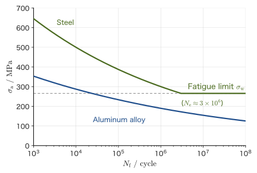
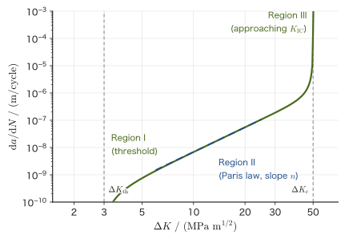
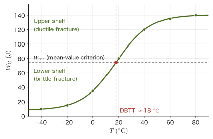
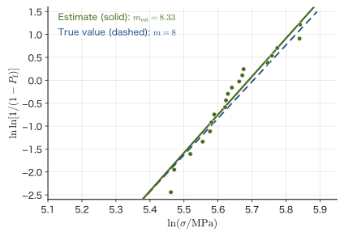

Chapter 22Fatigue, Scatter in Strength, and Environment-Assisted Fracture
If you bend a straight paper clip a long way with your fingers just once, it usually does not break. But if you keep bending it back and forth at the same spot, it eventually suffers metal fatigue and snaps under a force much smaller than the one you used at first. The phenomenon in which “a force that is harmless when applied once causes failure when it is repeated” is called fatigue. Aircraft airframes, bridges, automobile springs, artificial joints—many real structures do not just quietly keep receiving a constant force; instead, the stress rises and falls again and again with every vibration, every takeoff and landing, and every step. For this reason, most real fracture accidents are caused by fatigue, which static strength calculations alone cannot explain.
There is one more point. The Griffith theory of Chapter 21 was built on the idea that “the strength is determined once the half-length $a$ of the crack is known.” In reality, however, even if we break many specimens of the same material and the same shape, the strength does not come out exactly the same; it scatters from specimen to specimen. This is because the sizes of the defects inside a specimen and their locations differ slightly from one specimen to the next. In brittle materials such as ceramics in particular, where plastic deformation cannot smooth things over, this scatter appears so large that it cannot be ignored. Weibull statistics, which statistically treats “how many out of how many specimens will break,” is the tool for dealing quantitatively with this “scatter in strength.”
Furthermore, a material can fail not only because of load but also because of temperature changes or the chemical environment (moisture, corrosive ions, and so on). Thermal shock, in which a ceramic suddenly immersed in cold water cracks, and delayed fracture and stress corrosion cracking, in which high-strength steel or glass left for a long time under a constant load suddenly breaks one day, are likewise members of the family of “fracture that progresses with time” treated in this chapter. Building on the stress intensity factor $K_{\mathrm I}$ and the fracture toughness $K_{\mathrm{IC}}$ learned in Chapter 21, this chapter extends fracture mechanics to a form usable in actual design from three angles: “repetition,” “scatter,” and “environment.” The content of this chapter also bears directly on the reliability design of the structural and functional materials treated in the Department of Materials Science and Technology (how many years, how many repeated loading cycles, and what environments can be called safe).
This chapter is based on standard textbooks on strength of materials and fracture mechanics and on the original papers. A note on notation before we begin: this chapter does not use Poisson's number and uses only Poisson's ratio $\nu$ (the same as in Chapter 21). We write the exponent of the Paris law as $n$ and the scatter coefficient of Weibull statistics (the Weibull modulus) as $m$ to distinguish them. Also, the work-hardening exponent $n$ of Hollomon's equation in Chapter 19 and the exponent $n$ of the Paris law in this chapter are different quantities (a symbol in a different chapter should be read as a different quantity).
- The S–N curve of fatigue and the meaning of the fatigue limit (the difference between materials such as steel, which show a clear fatigue limit, and materials such as aluminum alloys, which do not)
- Basquin's law $\sigma_{\mathrm a}=\sigma'_{\mathrm f}(2N_{\mathrm f})^b$—a way of expressing fatigue life as a power law that gives a straight line on a log–log graph
- The connection to fracture mechanics: crack growth based on the Paris law $\dd a/\dd N=C(\Delta K)^n$, and the integral that gives the life (the closed-form expression for the case $n\neq2$)
- Estimating fatigue life with Miner's rule (the linear cumulative damage rule) when loads of different magnitudes are mixed
- The ductile-to-brittle transition temperature (DBTT) and the Charpy impact test, and why the transition appears differently in bcc and fcc metals
- The Weibull distribution $P_{\mathrm f}=1-\exp[-(V/V_0)(\sigma/\sigma_0)^m]$ derived from the weakest-link model, and the Weibull plot (the slope of the log–log graph is $m$)
- The size effect on strength $\sigma_1/\sigma_2=(V_2/V_1)^{1/m}$, and the effective volume $V_{\mathrm{eff}}=V/\{2(m+1)^2\}$ of the three-point bending test
- The thermal shock resistance $\Delta T_{\mathrm c}=\sigma_{\mathrm f}(1-\nu)/(E\alpha)$, and practical indices that also include the thermal conductivity
- Stress corrosion cracking, delayed fracture, and subcritical crack growth $v=AK_{\mathrm I}^n$—fracture that progresses with time under a constant load and environment
Source notes: This chapter supplements material not in the notes. Related notes: Yasuhide Mochizuki, Physics Notes: Mechanics of Materials (handwritten lecture notes, 6 pages in all). The content is aligned, in its symbols and numerical examples, with the Fracture Mechanics Simulator of the Mochizuki Laboratory (fracture-derivation.html, fracture-simulator.html).
22.1 What Is Fatigue? — The S–N Curve and the Fatigue Limit
Metal fatigue first became widely known in the mid-19th century, triggered by failures of the axles of railway vehicles. An axle that should be safe for any number of cycles as long as the load stays below a certain level suddenly snaps one day after repeated running—August Wöhler (in the 1860s) systematically carried out tests in which stress of constant amplitude was applied repeatedly to axles, and for the first time organized quantitatively the relationship between “the magnitude of the applied stress” and “the number of repetitions until failure.” A graph of this relationship is still called the S–N curve (also called the Wöhler curve) today.
Why: Why do small repeated forces cause fracture? — How fatigue fracture proceeds
The reason a metal breaks when stress is repeated, even at a stress much smaller than the yield stress (the stress at which the material begins to deform plastically), is that the following three stages proceed slowly inside the metal.
- Crack initiation. A metal is an aggregate of small crystal grains. In grains near the surface, even when the stress is low, back-and-forth slip gradually accumulates on particular slip planes (planes on which the atomic planes of the crystal slide past one another). This reciprocating deformation is not completely recovered, so small surface irregularities called “intrusions” and “extrusions” form, and eventually these become a microcrack about the size of a crystal grain. At places where stress is concentrated, such as around flaws, notches, and holes, this stage proceeds much faster.
- Crack propagation. Each time a tensile stress is applied, a microcrack deforms plastically a little at its tip and advances a little. When the fracture surface is examined with an electron microscope, the trace of the advance in each cycle remains as fine stripes (striations). The boundaries where the magnitude of the load changed can be seen even with the naked eye as a shell-like pattern (beach marks). The formula that expresses how this stage proceeds is the Paris law of Section 22.3.
- Final fracture. As the crack grows, the remaining cross section becomes smaller and the stress rises, and the crack also becomes longer, so the stress intensity factor increases. Eventually, at the maximum stress, $K_{\max}$ reaches $K_{\mathrm{IC}}$, and the remaining cross section fractures all at once (Section 22.3).
For this reason, a fatigue fracture surface divides into two parts: a smooth, striped fatigue-propagation region and a rough final-fracture region. In addition, fatigue with a life shorter than about $10^4$ cycles, accompanied by large plastic deformation, is called low-cycle fatigue, and fatigue with a longer life, which occurs macroscopically within the range of elastic deformation, is called high-cycle fatigue. The S–N curve and Basquin's law in this chapter deal mainly with high-cycle fatigue (low-cycle fatigue is organized by the amplitude of plastic strain and expressed by an empirical rule called the Coffin–Manson law).
Definition 22.1: Stress amplitude, mean stress, and stress ratio
In a fatigue test, the stress varies periodically with time. Letting the maximum value be $\sigma_{\max}$ and the minimum value be $\sigma_{\min}$,
$$ \sigma_{\mathrm a}=\frac{\sigma_{\max}-\sigma_{\min}}2,\qquad \sigma_{\mathrm m}=\frac{\sigma_{\max}+\sigma_{\min}}2,\qquad \Delta\sigma=\sigma_{\max}-\sigma_{\min}=2\sigma_{\mathrm a},\qquad R=\frac{\sigma_{\min}}{\sigma_{\max}} $$are called the stress amplitude, the mean stress, the stress range, and the stress ratio, respectively. A symmetric cycle with zero mean stress ($\sigma_{\min}=-\sigma_{\max}$, $R=-1$) is called fully reversed loading, and the case $\sigma_{\min}=0$ ($R=0$), in which only the tensile side is repeated, is called pulsating loading. The S–N curve is usually drawn as the relationship between this amplitude $\sigma_{\mathrm a}$ (or, for pulsating loading, the maximum stress) and the number of cycles to fracture $N_{\mathrm f}$ (the fracture cycle count).
Figure 22.1 schematically shows the S–N curves of steel and an aluminum alloy (the horizontal axis is on a logarithmic scale). For both materials, the larger the stress amplitude $\sigma_{\mathrm a}$, the shorter the life $N_{\mathrm f}$, but the two materials differ decisively in how the life decreases.

Definition 22.2: Fatigue limit
The upper limit of the stress amplitude at which fracture does not occur even as the number of cycles $N_{\mathrm f}\to\infty$ is called the fatigue limit $\sigma_{\mathrm w}$, and it is also called the endurance limit. In many body-centered cubic (bcc) metals, including steel, the S–N curve becomes nearly horizontal beyond about $10^6$–$10^7$ cycles, and a fatigue limit appears distinctly. For typical structural steels, it is empirically known that $\sigma_{\mathrm w}\approx0.4$–$0.5\times\sigma_{\mathrm B}$ ($\sigma_{\mathrm B}$: tensile strength). For materials whose fatigue limit is not distinct, the stress amplitude corresponding to a predetermined design life (for example, $10^8$ cycles) is called the fatigue strength and is used in place of the fatigue limit.
Why does steel show a fatigue limit while aluminum alloys rarely do?
First, let us review the terminology of crystal structure. A metal crystal is one in which atoms are arranged regularly. A structure in which atoms sit at the eight vertices and the center of a cube is called body-centered cubic (bcc); a structure in which atoms sit at the eight vertices and the centers of the six faces is called face-centered cubic (fcc); and a structure based on a hexagonal prism, in which the atoms are stacked as densely as possible, is called hexagonal close-packed (hcp). At room temperature, iron and steel are bcc; aluminum, copper, and nickel are fcc; and titanium, magnesium, and zinc are hcp.
There are two views of the cause of the fatigue limit. (1) The standard explanation is that below the limit, microcracks still form, but they stop without propagating. When the stress amplitude is small, a microcrack formed inside a surface grain runs into a microstructural barrier such as a grain boundary and stops (a non-propagating crack). Combining this with the threshold value $\Delta K_{\mathrm{th}}$ at which a crack begins to advance, which we study in Section 22.3, the condition under which a crack of length $a$ cannot advance is $Y\Delta\sigma\sqrt{\pi a}\lt\Delta K_{\mathrm{th}}$. In fully reversed loading ($R=-1$), only the tensile-side range $\sigma_{\mathrm a}$ is counted, so the fatigue limit can be written $\sigma_{\mathrm w}\approx\Delta K_{\mathrm{th}}/(Y\sqrt{\pi a})$. For example, if $\Delta K_{\mathrm{th}}=3\ \mathrm{MPa\sqrt m}$, $Y=1.12$, and $\sigma_{\mathrm w}=266\ \mathrm{MPa}$, then $a\approx32\ \mu\mathrm m$, which means that a crack can advance only up to about the size of a crystal grain. (2) It is also considered a contributing cause of the fatigue limit that interstitial solute atoms (atoms that have entered the gaps between the atoms of the crystal lattice) such as carbon and nitrogen in steel gather around dislocations (linear lattice defects that carry the slip of the crystal) and fix them so that they move only with difficulty (pinning, Cottrell atmosphere, strain aging), which hinders the accumulation of slip at small stresses.
In contrast, many fcc metals such as aluminum alloys have only weak pinning of this kind, and however far the stress amplitude is lowered, they eventually fracture if the number of cycles is made large enough; that is, they often do not show a distinct fatigue limit. This is, however, a typical tendency, and there are exceptions (for example, titanium alloys (hcp) sometimes show a fatigue limit, and a fatigue limit may also appear in fcc austenitic stainless steels). In designing with materials whose fatigue limit is not distinct, a design life such as $10^8$ cycles is fixed, and the stress is kept at or below the stress amplitude (fatigue strength) corresponding to that number of cycles. Aluminum alloys have been used extensively in aircraft airframes, and fatigue management of airframe structures has been regarded as especially important; this property is also part of the background to that emphasis (see also the Comet airliner accidents in Section 22.3).
Application: Infinite-life design and safe-life design
For materials with a distinct fatigue limit, keeping the working stress amplitude at or below the fatigue limit makes possible a design that in theory will not fail however many times the load is repeated (infinite-life design). Automotive coil springs and the bearings of stationary machinery, for example, are often designed on this principle. On the other hand, for materials whose fatigue limit is not distinct, or when a somewhat high stress must be tolerated to save weight (aircraft airframes, rotor blades, and so on), safe-life design is adopted: one estimates “how many cycles are safe,” and when the corresponding life (for example, hours of operation or number of flights) is reached, the part is inspected or replaced. There is also the approach of damage tolerance design, which presupposes that cracks exist and operates the structure while predicting the growth of cracks found at periodic inspections (Section 22.3). Basquin's law and the Paris law, which we study from Section 22.2 onward, are the formulas used to estimate these lives.
Example 22.1: Reading the S–N curve and the fatigue limit
Consider the S–N curve of steel in Figure 22.1 (drawn from Basquin's law, which we study in Section 22.2, with $\sigma'_{\mathrm f}=1499.9\ \mathrm{MPa}$ and $b=-0.1109$). (1) When the steel is used at a stress amplitude $\sigma_{\mathrm a}=400\ \mathrm{MPa}$, roughly how many cycles to fracture can be read off the curve? (2) About how many MPa is the fatigue limit $\sigma_{\mathrm w}$ of this steel? (3) For continued use at a stress amplitude $\sigma_{\mathrm a}=200\ \mathrm{MPa}$, state, together with the reason, how the behavior of the steel and that of the aluminum alloy (blue curve) differ as the number of cycles is increased.
Solution. (1) Reading on the horizontal axis the position where the steel curve (green) in Figure 22.1 crosses the height $\sigma_{\mathrm a}=400\ \mathrm{MPa}$, we find it between $10^4$ and $10^5$, close to $10^5$, at roughly $N_{\mathrm f}\approx7\times10^4$–$8\times10^4$ cycles (checking with Eq. \eqref{eq:22-basquin} of Section 22.2, $N_{\mathrm f}=\tfrac12(400/1499.9)^{1/(-0.1109)}\approx7.5\times10^{4}$). (2) Reading the height at which the curve bends over to horizontal, the fatigue limit is about $\sigma_{\mathrm w}\approx266\ \mathrm{MPa}$. (3) Since $200\ \mathrm{MPa}$ is smaller than the fatigue limit of steel (about $266\ \mathrm{MPa}$), steel does not fracture however many times the loading is repeated (infinite life). On the other hand, the curve of the aluminum alloy has no horizontal portion, and the position where it crosses the height of $200\ \mathrm{MPa}$ is near $N_{\mathrm f}\approx5\times10^5$ cycles. That is, even at the same stress amplitude, the aluminum alloy will eventually fracture if the loading is repeated, and an “infinite life” cannot be expected. For the aluminum alloy, safe-life design is necessary, in which a design life (the permitted number of cycles) is fixed in advance and the stress is kept at or below the corresponding stress amplitude.
22.2 Basquin's Law — Fatigue Life Expressed by a Power Law
If we redraw the S–N curve of Figure 22.1 with both the horizontal and vertical axes on logarithmic scales, focusing only on the downward-sloping part up to the point where the fatigue limit appears, it is known empirically that for many materials the curve becomes nearly a straight line. As the properties of the logarithm show, “a straight line on a log–log graph” is the mark of two quantities related by a power law $y=cx^p$ (we have $\ln y=\ln c+p\ln x$, so with $\ln x$ on the horizontal axis and $\ln y$ on the vertical axis this is a straight line with slope $p$ and intercept $\ln c$). O. H. Basquin (1910) applied this empirical rule to fatigue life and proposed the following equation.
Law 22.1: Basquin's law
Between the stress amplitude $\sigma_{\mathrm a}$ and the number of cycles to fracture $N_{\mathrm f}$, the following power law holds approximately:
\begin{equation} \sigma_{\mathrm a}=\sigma'_{\mathrm f}\,(2N_{\mathrm f})^{b} \label{eq:22-basquin} \end{equation}Here $\sigma'_{\mathrm f}$ is the fatigue strength coefficient (in units of stress, such as MPa), and $b$ is the fatigue strength exponent (a dimensionless negative constant that takes values of roughly $-0.05$ to $-0.15$ for many metals). The use of $2N_{\mathrm f}$ (the number of half-cycles, that is, the number of reversals) follows the convention for organizing fatigue-test data. Taking the logarithm of both sides gives
$$ \ln\sigma_{\mathrm a}=\ln\sigma'_{\mathrm f}+b\ln(2N_{\mathrm f}) $$so on a log–log graph with $\ln(2N_{\mathrm f})$ on the horizontal axis and $\ln\sigma_{\mathrm a}$ on the vertical axis, this is a straight line with slope $b$ whose intercept at $N_{\mathrm f}=1/2$ ($2N_{\mathrm f}=1$) is $\ln\sigma'_{\mathrm f}$.
Caution: Basquin's law is purely an empirical formula
Basquin's law is an empirical approximation that fits the fatigue data of many metallic materials well; unlike Griffith's criterion in Section 21.2, it was not rigorously derived from a physical law. In particular, the whole S–N curve of a steel that has a fatigue limit cannot be expressed by a single power law: Eq. \eqref{eq:22-basquin} is a good approximation only in the downward-sloping interval before the curve bends over to the fatigue limit (the finite-life region), and at or below the fatigue limit $\sigma_{\mathrm w}$ a separate treatment is needed (this is why the steel curve in Figure 22.1 is drawn as a combination of the straight Basquin-law part and the horizontal part beyond $N_{\mathrm e}$). For aluminum alloys, which have no fatigue limit, Basquin's law is often a good approximation over the entire measured range.
Example 22.2: Finding the Basquin constants from two data points and predicting the life
The following two data points were obtained from fatigue tests of a certain steel: $N_{\mathrm f}=10^4$ cycles at $\sigma_{\mathrm a}=500\ \mathrm{MPa}$, and $N_{\mathrm f}=10^6$ cycles at $\sigma_{\mathrm a}=300\ \mathrm{MPa}$. (1) Find the Basquin constants $\sigma'_{\mathrm f}$ and $b$. (2) Predict the fatigue life $N_{\mathrm f}$ at $\sigma_{\mathrm a}=350\ \mathrm{MPa}$.
Solution. (1) Substituting the two sets of values into Eq. \eqref{eq:22-basquin} gives
$$ 500=\sigma'_{\mathrm f}(2\times10^4)^b,\qquad 300=\sigma'_{\mathrm f}(2\times10^6)^b $$Taking the ratio of the corresponding sides eliminates $\sigma'_{\mathrm f}$:
$$ \frac{500}{300}=\left(\frac{2\times10^4}{2\times10^6}\right)^{b}=(10^{-2})^{b} $$Taking the natural logarithm of both sides gives $\ln(500/300)=b\ln(10^{-2})=-2b\ln10$, so
$$ b=-\frac{\ln(500/300)}{2\ln10}=-\frac{0.5108}{4.6052}\approx-0.1109 $$Substituting this back into the first equation, we obtain $\sigma'_{\mathrm f}=500/(2\times10^4)^{b}\approx1499.9\ \mathrm{MPa}$ (the steel curve in Figure 22.1 is also drawn using these values $\sigma'_{\mathrm f},b$).
(2) Solving Eq. \eqref{eq:22-basquin} for $2N_{\mathrm f}$ gives $2N_{\mathrm f}=(\sigma_{\mathrm a}/\sigma'_{\mathrm f})^{1/b}$, so substituting $\sigma_{\mathrm a}=350\ \mathrm{MPa}$,
$$ 2N_{\mathrm f}=\left(\frac{350}{1499.9}\right)^{1/(-0.1109)}\approx4.98\times10^5 \qquad\therefore\ N_{\mathrm f}\approx2.5\times10^5\ \text{cycles} $$That is, we see that lowering the stress amplitude by only about 30%, from 500 MPa to 350 MPa, extends the life by more than an order of magnitude, from the order of $10^4$ cycles to the order of $10^5$ cycles—which is why lowering the stress even slightly is extremely effective in fatigue design.
22.3 The Connection to Fracture Mechanics — The Paris Law and Integration of Crack Growth Life
Basquin's law of Section 22.2 was, so to speak, a “black-box” empirical rule that treats the material as a whole through a single relation between stress amplitude and life. By contrast, using the ideas of fracture mechanics learned in Chapter 21, we can go one step further and treat fatigue as “a process in which a crack grows little by little.” P. C. Paris (around 1961) found that the crack growth rate $\dd a/\dd N$ under cyclic stress (the increase in crack length per cycle) is determined almost entirely by the range of variation of the stress intensity factor in that cycle, namely the stress intensity factor range:
$$ \Delta K=K_{\max}-K_{\min}=Y\,\Delta\sigma\sqrt{\pi a} $$Here $\Delta\sigma=\sigma_{\max}-\sigma_{\min}$ is the stress range (Definition 22.1), and $Y$ is the geometry factor of Chapter 21.
Why does $\Delta K$ determine the growth rate? As we learned in Chapter 21, the magnitude of the stress around the crack tip is determined by the stress intensity factor $K_{\mathrm I}$ alone. Therefore, even for two members that differ in shape, size, and load, if the range of variation $\Delta K$ of $K_{\mathrm I}$ during the cycling is the same, the same stress fluctuation is repeated at the crack tip, so the cracks should also grow at the same rate. Note also that when $R\lt0$ the stress swings to the compressive side as well, but in compression the crack closes and no tensile stress acts at the tip, so by convention only the tensile side is counted in computing $\Delta K$ (we regard $\sigma_{\min}$ as 0 and take $\Delta\sigma=\sigma_{\max}$).
Law 22.2: Paris law
The growth rate of a fatigue crack can be approximated by a power law in the stress intensity factor range $\Delta K$:
\begin{equation} \frac{\dd a}{\dd N}=C(\Delta K)^{n} \label{eq:22-paris} \end{equation}$C,n$ are constants determined by the material (and the environment). To distinguish it from $m$, the Weibull modulus (Section 22.6), we write the exponent here as $n$. For many metals, $n\approx2$–$4$.
As in Figure 22.2, if the actual crack growth rate is plotted on a log–log graph with $\Delta K$ on the horizontal axis and $\dd a/\dd N$ on the vertical axis, the middle region (region II) is a straight line that follows the Paris law. In region I, where $\Delta K$ is smaller, the crack almost stops growing once the range falls below a certain value $\Delta K_{\mathrm{th}}$ (the threshold stress intensity factor range); conversely, in region III, where $\Delta K$ is larger, the growth rate increases sharply as the stress intensity factor approaches the fracture toughness $K_{\mathrm{IC}}$ (Chapter 21), and finally unstable fracture ($K_{\mathrm I}=K_{\mathrm{IC}}$) occurs. For design, the region of particular importance is region II, where the behavior is linear.

22.3.1 Integrating the Paris law to find the life (a closed-form expression for $n\neq2$)
Substitute $\Delta K=Y\Delta\sigma\sqrt{\pi a}$ into Eq. \eqref{eq:22-paris}. Here, as the simplest case, we assume (i) that $Y$ and $\Delta\sigma$ do not change as the crack grows, and (ii) that the crack length is sufficiently small compared with the width of the member (as the crack approaches the width, $Y$ changes). Then we obtain
$$ \frac{\dd a}{\dd N}=C\left(Y\Delta\sigma\sqrt{\pi a}\right)^{n}=C(Y\Delta\sigma)^n\pi^{n/2}a^{n/2} $$which is a differential equation in which $a$ and $N$ can be separated (separation of variables; University Mathematics, Chapter 33). Let us find the number of cycles $N_{\mathrm f}$ required for the crack to grow from the initial crack length $a_0$ to the critical crack length $a_{\mathrm c}$ determined by the fracture toughness.
Unstable fracture occurs when, at the moment of maximum stress in the cycle, $K_{\max}=Y\sigma_{\max}\sqrt{\pi a}$ reaches $K_{\mathrm{IC}}$. Therefore the critical crack length is determined not by the stress range $\Delta\sigma$ but by the maximum stress $\sigma_{\max}$, and is given by
\begin{equation} a_{\mathrm c}=\frac1\pi\left(\frac{K_{\mathrm{IC}}}{Y\sigma_{\max}}\right)^2 \label{eq:22-ac} \end{equation}This has the same form as the fracture criterion of Chapter 21. Note that we use $\Delta\sigma$ for $\Delta K$ and $\sigma_{\max}$ for judging fracture. For pulsating loading with $R=0$, the two coincide, $\sigma_{\max}=\Delta\sigma$, but in general they differ (for example, for $R=0.5$, $\Delta\sigma=0.5\,\sigma_{\max}$).
Derivation: Fatigue life from integrating the Paris law ($n\neq2$)
Separating the variables gives
$$ \frac{\dd a}{a^{n/2}}=C(Y\Delta\sigma)^n\pi^{n/2}\,\dd N $$We integrate the left side from $a=a_0$ to $a=a_{\mathrm c}$ and the right side from $N=0$ to $N=N_{\mathrm f}$. The left-hand integral is the integral of a power function (University Mathematics, Chapter 5), and as long as the exponent $-n/2$ is not $-1$ (that is, when $n\neq2$),
$$ \int_{a_0}^{a_{\mathrm c}}a^{-n/2}\,\dd a=\left[\frac{a^{1-n/2}}{1-n/2}\right]_{a_0}^{a_{\mathrm c}}=\frac{a_{\mathrm c}^{\,p}-a_0^{\,p}}{p},\qquad p\equiv1-\frac n2 $$(here $p$ is an abbreviation for writing the exponent compactly). The right side is the integral of a constant, so it is $C(Y\Delta\sigma)^n\pi^{n/2}N_{\mathrm f}$. Equating the two sides and solving for $N_{\mathrm f}$, we obtain
\begin{equation} N_{\mathrm f}=\frac{a_{\mathrm c}^{\,p}-a_0^{\,p}}{p\,C(Y\Delta\sigma)^{n}\pi^{n/2}},\qquad p=1-\frac n2\quad(n\neq2) \label{eq:22-paris-life} \end{equation}∎
When $a_0\ll a_{\mathrm c}$ and $n\gt2$ ($p\lt0$), $a^{p}$ is larger the smaller $a$ is, so $a_{\mathrm c}^{\,p}$ is negligible compared with $a_0^{\,p}$, and Eq. \eqref{eq:22-paris-life} becomes $N_{\mathrm f}\approx a_0^{\,p}\big/\{|p|\,C(Y\Delta\sigma)^n\pi^{n/2}\}$. The life is determined almost entirely by the initial crack size $a_0$ and the stress range $\Delta\sigma$, and $N_{\mathrm f}\propto(\Delta\sigma)^{-n}$.
Caution: The case $n=2$ gives a logarithm
For $n=2$, where the exponent $p=1-n/2$ in Eq. \eqref{eq:22-paris-life} becomes 0, the intermediate integral becomes $\int a^{-1}\dd a=\ln a$, and the power formula cannot be used (it would mean dividing by $0$). In this case we start over from the beginning, and obtain
$$ N_{\mathrm f}=\frac{1}{C(Y\Delta\sigma)^2\pi}\ln\!\frac{a_{\mathrm c}}{a_0}\qquad(n=2) $$which is a logarithmic form (we computed the case $n=2$ separately and also checked it with computer algebra software).
Example 22.3: Computing the fatigue life by integrating the Paris law
On the surface of a wide plate of a certain steel there is an edge crack of initial crack length (depth) $a_0=1\ \mathrm{mm}$ (geometry factor $Y=1.12$, Chapter 21). Pulsating loading with $R=0$ and a stress range $\Delta\sigma=100\ \mathrm{MPa}$ (so that $\sigma_{\max}=\Delta\sigma=100\ \mathrm{MPa}$) is applied repeatedly. Take the Paris-law constants to be $C=6.9\times10^{-12}$ and $n=3$ when $\Delta K$ is expressed in $\mathrm{MPa\sqrt m}$ and $\dd a/\dd N$ in $\mathrm{m/cycle}$, and the fracture toughness to be $K_{\mathrm{IC}}=50\ \mathrm{MPa\sqrt m}$. Find the fatigue life $N_{\mathrm f}$ until the crack reaches unstable fracture.
Solution. First we find the critical crack length from Eq. \eqref{eq:22-ac} ($\sigma_{\max}=100\ \mathrm{MPa}$):
$$ a_{\mathrm c}=\frac1\pi\left(\frac{50}{1.12\times100}\right)^2\ \mathrm m=\frac1\pi\times0.1993\ \mathrm m\approx0.06344\ \mathrm m=63.4\ \mathrm{mm} $$Since $n=3\neq2$, Eq. \eqref{eq:22-paris-life} can be used. We have $p=1-3/2=-1/2$, and
$$ N_{\mathrm f}=\frac{a_{\mathrm c}^{-1/2}-a_0^{-1/2}}{(-1/2)\,C(Y\Delta\sigma)^{3}\pi^{3/2}} $$Substituting the numerical values ($a_{\mathrm c}=0.06344\ \mathrm m$, $a_0=0.001\ \mathrm m$, $Y\Delta\sigma=112\ \mathrm{MPa}$), we get
$$ N_{\mathrm f}\approx1.02\times10^{6}\ \text{cycles} $$(a direct check by numerical integration gave the same value). Unit check: the factor $C(Y\Delta\sigma)^3\pi^{3/2}$ in the denominator has units $\mathrm{m/cycle}\cdot(\mathrm{MPa\sqrt m})^{-3}\cdot\mathrm{MPa}^3=\mathrm{m^{-1/2}/cycle}$, and the ratio of the units $\mathrm{m^{-1/2}}$ of the numerator $a^{-1/2}$ to this is a number of cycles, which is consistent.
With the same formula, halving $a_0$ to $0.5\ \mathrm{mm}$ gives $N_{\mathrm f}\approx1.51\times10^{6}$ cycles, so the life is extended by a factor of about 1.5 (the ratio is 1.47)—we see that keeping the initial crack small (reducing surface defects by grinding and inspection) is effective for fatigue life. Note that the large value $a_{\mathrm c}=63\ \mathrm{mm}$ was obtained by assuming that the plate is sufficiently wide. In a real plate, as the crack approaches the width, $Y$ changes from $1.12$. However, most of the value of the integral is determined while the crack is small (near $a_0$) ($a^{-3/2}$ is larger for smaller $a$), so the effect on this estimate is small.
Discussion: How Basquin's law, the Paris law, and the fatigue limit are connected
The contents of Sections 22.1–22.3 are not separate stories; they are the same phenomenon seen from different sides.
The two parts of the life. The fatigue life is the sum of the number of cycles before a crack forms and the number of cycles for that crack to grow and cause fracture. The integral of the Paris law (Eq. \eqref{eq:22-paris-life}) represents the latter (the growth life when an initial crack $a_0$ already exists). On the other hand, the S–N curve and Basquin's law, measured on smooth specimens without cracks, represent the total life, the two combined.
The relation between the exponents. For $a_0\ll a_{\mathrm c}$ and $n\gt2$ we had $N_{\mathrm f}\propto(\Delta\sigma)^{-n}$. Basquin's law can be rewritten as $N_{\mathrm f}\propto\sigma_{\mathrm a}^{\,1/b}$, so if most of the life is occupied by growth, we expect the correspondence $1/b\leftrightarrow-n$, that is, $b\approx-1/n$. In reality, however, $b$ is $-0.05$ to $-0.15$ (so $1/|b|$ is $7$ to $20$, much larger than $n\approx2$–$4$). This is thought to be because in smooth specimens the life before a crack forms occupies a large part of the total life, and that part is even more sensitive to stress.
The relation to the fatigue limit. For $\Delta K\lt\Delta K_{\mathrm{th}}$ the crack does not grow. Expressed in terms of stress, this condition becomes $\Delta\sigma\lt\Delta K_{\mathrm{th}}/(Y\sqrt{\pi a})$ for a crack of length $a$, which corresponds directly to the view of the fatigue limit in Section 22.1 (non-propagating cracks). The smaller the defects, the higher the threshold stress for growth, and the fatigue limit is determined by the size of the largest defects in the material (the Kitagawa–Takahashi approach; when the crack becomes extremely small, $\Delta K_{\mathrm{th}}$ itself decreases, so this relation holds in the range where $a$ is sufficiently large).
History: Fatigue failure of the de Havilland Comet (1954)
The de Havilland Comet, the world's first jet airliner, suffered two accidents in succession, in January 1954 (off the island of Elba) and April 1954 (off Naples), shortly after entering service (1952), in which the aircraft broke up in the air while flying at high altitude. In the investigation of the cause, a test was carried out in which an actual airframe was submerged in a water tank and repeatedly pressurized and depressurized (a method that was groundbreaking at the time, in which the pressure difference between the inside and outside of the airframe applies cyclic stress to the skin). From the wreckage of the aircraft that crashed off Elba, it was found that a fatigue crack had started from a hole (a rivet hole or bolt hole) near the window for the automatic direction finder (ADF) antenna in the cabin roof. The numbers of pressurization cycles (flights) of the accident aircraft were about 1,300 for the January aircraft and about 900 for the April aircraft. In the test in which a fuselage of the same type was pressurized and depressurized in the water tank, the fuselage failed at a cumulative total of a little over 3,000 cycles (3,057, of which about 1,230 were cycles from actual service). The origin of the fracture in this test was the corner of the cutout of the forward emergency exit. In both cases, the fatigue crack grew gradually, and finally the fracture toughness of the airframe was exceeded and the fuselage underwent sudden unstable fracture. The corners of openings such as windows and emergency exits have strong stress concentration, which hastened the initiation of fatigue cracks.
After this accident, fatigue became the most important item for consideration in aircraft design. The concepts of fail-safe design, in which a structure is designed so that it does not collapse as a whole even if one location fails, and of safe-life design, in which no fatigue crack is allowed to form during the design life, spread widely. Damage tolerance design, in which the existence of cracks is assumed, cracks are found by inspection, and the remaining life is estimated from crack growth, was standardized in the 1970s along with the development of fracture mechanics. The Paris law was discovered (1961–63) after the accident, but today the growth of that crack could be estimated with the Paris law. The integral in this section is precisely a tool for estimating, “when a crack is found, how much longer can the structure remain in service?”
22.4 Miner's Rule — The Linear Cumulative Damage Rule
Basquin's law and the Paris law of Sections 22.2 and 22.3 were formulas that give the life when stress of constant amplitude is applied continuously. In real structures (automobiles, bridges, machines), however, the loads usually contain stress amplitudes of different magnitudes mixed together over time. So that the life can be estimated no matter in what order and in what proportions stress amplitudes of different magnitudes are mixed, M. A. Miner (1945; the idea itself goes back to a proposal by A. Palmgren in 1924) proposed the following simple rule of “adding up damage.”
Intuition: A “remaining-life meter” that counts down as the fatigue life is used up
Suppose that the life under stress amplitude $\sigma_i$ alone is $N_i$ cycles. Then each time $\sigma_i$ is applied for one cycle, we regard a fraction $1/N_i$ of the life as having been “used up.” Even when stresses of various amplitudes are mixed, we simply keep adding up the “fraction consumed” contributed by each amplitude, and fatigue fracture occurs when the total reaches 1 (= the state in which 100% of the life has been used up). This is the idea of Miner's rule. It is similar to a fuel gauge, which simply goes down according to the distance driven (in reality the fuel economy changes with how one drives, and in the same way real fatigue damage also depends on the order of the loads, but Miner's rule is an approximation that ignores this—see Section 22.4.1).
Law 22.3: Miner's rule (linear cumulative damage rule)
Suppose that several load blocks, in which stress of amplitude $\sigma_i$ is applied for $n_i$ cycles, are mixed ($i=1,2,\dots,k$), and let $N_i$ be the life when only that amplitude is applied continuously (it can be calculated from Basquin's law and the like). Then we define the damage index $D$ by
\begin{equation} D=\sum_{i=1}^{k}\frac{n_i}{N_i} \label{eq:22-miner} \end{equation}and consider that fatigue fracture occurs when $D=1$ is reached. If $D\lt1$, life still remains; when $D\ge1$, the member is regarded as having failed. (Here $n_i$ is the number of cycles actually applied at stage $i$, and it is distinct from the exponent $n$ of the Paris law, which has no subscript.)
Example 22.4: Computing the cumulative damage with Miner's rule
The same steel as in Example 22.2 ($\sigma'_{\mathrm f}\approx1499.9\ \mathrm{MPa}$, $b\approx-0.1109$) was subjected repeatedly to the following three stress amplitudes, each for the number of cycles shown. Find the damage index $D$ based on Miner's rule, and determine whether this member fails.
| $\sigma_i\ (\mathrm{MPa})$ | $n_i$ (number of cycles) |
|---|---|
| 450 | 2000 |
| 350 | 5000 |
| 280 | 50000 |
Solution. For each amplitude, we find the life $N_i$ under that amplitude alone from Basquin's law (Eq. \eqref{eq:22-basquin}). For example, for $\sigma_i=450\ \mathrm{MPa}$,
$$ 2N_i=\left(\frac{450}{1499.9}\right)^{1/(-0.1109)}\approx5.17\times10^{4}\qquad\therefore\ N_i\approx2.59\times10^{4} $$Similarly, $N_i\approx2.49\times10^{5}$ for $\sigma_i=350\ \mathrm{MPa}$ and $N_i\approx1.86\times10^{6}$ for $\sigma_i=280\ \mathrm{MPa}$. Therefore the damage in each block is
$$ \frac{n_1}{N_1}=\frac{2000}{2.59\times10^4}\approx0.0774,\qquad \frac{n_2}{N_2}=\frac{5000}{2.49\times10^5}\approx0.0201,\qquad \frac{n_3}{N_3}=\frac{50000}{1.86\times10^6}\approx0.0268 $$Adding these up according to Eq. \eqref{eq:22-miner}, we obtain
$$ D\approx0.0774+0.0201+0.0268\approx0.124 $$Since $D\approx0.12\lt1$, this member does not yet fail. One application of this loading pattern uses up about 12.4% of the life, so from $1/0.1242\approx8.05$ we can estimate that, if the same pattern is repeated, $D\approx0.994$ after eight repetitions in total (including the first), and that $D=1$ is reached partway through the ninth repetition, at which point fracture occurs.
22.4.1 Limitations of Miner's rule
Caution: Miner's rule is an approximation that ignores the order of loading
Eq. \eqref{eq:22-miner} assumes that, in whatever order the stress amplitudes are applied, the same combination of $n_i$ gives the same $D$. In real materials, however, it is known that if a single large stress is applied first, local plastic deformation (yielding) occurs in its vicinity, and the subsequent fatigue behavior (how easily cracks initiate and grow) changes. For example, if a large tensile stress is applied first, then after unloading a compressive stress remains around the crack tip as a stress that persists even when the external force is removed (residual stress), and for the subsequent small stress amplitudes the life may actually be extended (the retardation of crack growth caused by an overload). Conversely, depending on the order, the life may also be shortened. This load sequence effect is not built into Miner's rule. For this reason, in practice Miner's rule is used as a simple first-order approximation, while for important structures the design is verified by analyses that take the load sequence into account in more detail and by full-scale fatigue tests.
Miner's rule has the following further limitations. (1) The value of $D$ at which fatigue fracture occurs in experiments is not exactly 1, but is known to scatter over a range of roughly $0.3$–$3$. (2) Treating a stress amplitude below the fatigue limit as $N_i=\infty$, so that $n_i/N_i=0$ (no contribution to the damage), can lead to an evaluation on the unsafe side (the side that overestimates the life). This is because, once a crack has formed under a large stress, the crack can grow even under a small stress below the original fatigue limit.
22.5 The Ductile-to-Brittle Transition and the Charpy Impact Test
The fatigue discussed so far was a kind of fracture in which damage progresses little by little under repeated loading. Let us now change the subject a little and look at the phenomenon that “the same material fractures in a completely different way depending on the temperature.” Many body-centered cubic (bcc) metals such as steel change their mode of fracture abruptly at a certain temperature as the temperature is lowered, from ductile fracture, in which the material deforms tenaciously before it fractures, to brittle fracture, in which it fractures suddenly with almost no deformation. This change is called the ductile-to-brittle transition, and the temperature at the boundary is called the ductile-to-brittle transition temperature (DBTT).
22.5.1 The Charpy impact test
A representative method for investigating the DBTT experimentally is the Charpy impact test (devised by G. Charpy in 1901). The standard specimen is a prismatic bar with a cross section of $10\ \mathrm{mm}\times10\ \mathrm{mm}$ and a length of $55\ \mathrm{mm}$, with a notch called a V-notch (depth $2\ \mathrm{mm}$) cut into it. It is broken by a single blow from a pendulum equipped with a hammer, and the energy used to break the specimen (the absorbed energy, written $W_{\mathrm C}$ in this book; $E$ is the symbol for Young's modulus and is therefore not used; the unit is the joule, J) is determined from the difference between the pendulum's potential energy before and after the impact (the potential energy it has lost). If many specimens of the same material are tested at different temperatures, and the test temperature is plotted on the horizontal axis and the absorbed energy on the vertical axis, a curve like the one in Figure 22.3 is obtained.
Definition 22.3: Upper shelf, lower shelf, and how to read the DBTT
The high level of absorbed energy that is nearly constant on the high-temperature side is called the upper shelf (ductile fracture dominates), and the low level that is nearly constant on the low-temperature side is called the lower shelf (brittle fracture dominates). There are mainly three ways to determine the DBTT: (i) the temperature at which the curve crosses the mean of the absorbed energies of the upper and lower shelves, $W_{\mathrm{crit}}=(W_{\mathrm{upper}}+W_{\mathrm{lower}})/2$ (the mean-value criterion); (ii) the temperature at which the curve crosses a predetermined fixed energy value (this differs among standards; for structural steels, $27\ \mathrm J$ and $41\ \mathrm J$ are often used) (the fixed-value criterion); and (iii) the temperature at which the fraction of the fracture surface occupied by the shiny, flat brittle fracture surface (the brittle fracture surface fraction) is 50% (the fracture-appearance criterion, FATT: fracture appearance transition temperature). Note that all of these are conventions adopted in practice and in individual standards, and that there is no physically unique “correct” definition.

Application: Why the DBTT matters in practice
For structures used at temperatures below the DBTT (bridges and storage tanks in cold regions, ships sailing in cold waters, spacecraft, and so on), even at stresses that a static strength calculation would regard as quite safe, there is a danger that a brittle fracture, triggered by impact loads (impact at ship launching, waves, seismic motion, and so on) or by stress-concentration sites such as welds and notches, will propagate instantaneously and over a large extent (the crack does not stop). For this reason, in selecting steel for low-temperature service, material standards are established on the basis of Charpy test results so that the service temperature does not end up well below the DBTT of the steel.
Example 22.5: Reading the DBTT from Charpy test data
In a Charpy impact test of a certain steel, the following absorbed energies were obtained.
| $T\ (^\circ\mathrm C)$ | $-40$ | $-20$ | $0$ | $20$ | $40$ | $60$ | $80$ |
|---|---|---|---|---|---|---|---|
| $W_{\mathrm C}\ (\mathrm J)$ | 10 | 15 | 35 | 80 | 120 | 135 | 140 |
(1) Find the DBTT by the mean-value criterion. (2) Find the DBTT by the fixed-value criterion ($W_{\mathrm C}=27\ \mathrm J$). In both cases, you may interpolate by connecting adjacent data points with straight lines.
Solution. (1) The upper shelf is $W_{\mathrm{upper}}=140\ \mathrm J$ (the value at $80\,^\circ\mathrm C$, assumed to remain nearly constant at still higher temperatures) and the lower shelf is $W_{\mathrm{lower}}=10\ \mathrm J$ (the value at $-40\,^\circ\mathrm C$), so $W_{\mathrm{crit}}=(140+10)/2=75\ \mathrm J$. From the table, $W_{\mathrm C}=75\ \mathrm J$ lies between $T=0\,^\circ\mathrm C$ ($35\ \mathrm J$) and $T=20\,^\circ\mathrm C$ ($80\ \mathrm J$), so by linear interpolation,
$$ T_{\mathrm{DBTT}}=0+20\times\frac{75-35}{80-35}=20\times\frac{40}{45}\approx17.8\,^\circ\mathrm C $$(2) Since $W_{\mathrm C}=27\ \mathrm J$ lies between $T=-20\,^\circ\mathrm C$ ($15\ \mathrm J$) and $T=0\,^\circ\mathrm C$ ($35\ \mathrm J$),
$$ T_{\mathrm{DBTT}}=-20+20\times\frac{27-15}{35-15}=-20+20\times\frac{12}{20}=-8\,^\circ\mathrm C $$Note that the values read off by the two criteria differ by about $26\,^\circ\mathrm C$. The DBTT is a quantity that depends on how the criterion is chosen, and values obtained by different criteria must not be compared directly (the value of about $18\,^\circ\mathrm C$ read from the smooth curve of Figure 22.3 by the mean-value criterion is also close to that of (1)).
22.5.2 Why does the transition appear prominently in bcc metals but hardly in fcc metals?
Intuition: The “competition” between the yield stress and the cleavage fracture stress
A crystal deforms plastically (deforms in a way that does not return to the original shape even when the force is removed) because dislocations move. The stress needed to make dislocations move and start plastic deformation is the yield stress $\sigma_{\mathrm y}$. On the other hand, if the stress at the crack tip reaches the stress $\sigma_{\mathrm c}$ at which atomic planes are pulled apart as they are and split (cleavage), the material fractures in a brittle manner. The material chooses how it fractures according to which of these two is reached first.
- When $\sigma_{\mathrm y}\lt\sigma_{\mathrm c}$: the material yields and deforms plastically before it cracks, and the crack tip is blunted so that the stress decreases; the result is a tough ductile fracture.
- When $\sigma_{\mathrm y}\gt\sigma_{\mathrm c}$: the stress reaches the cleavage stress before yielding occurs, so the material undergoes brittle fracture with almost no deformation.
The cleavage stress $\sigma_{\mathrm c}$ is determined by the strength of the bonds between atoms and depends little on temperature. The temperature dependence of the yield stress $\sigma_{\mathrm y}$ is completely different for bcc metals and fcc metals (Figure 22.4).
- bcc metals (iron, steel, etc.): For a dislocation (especially a screw dislocation) to move, part of the dislocation line must first shift to the neighboring stable position, and this displacement must then spread along the line (the formation of a kink pair). This requires the help of thermal vibration (a thermally activated process; the resistance corresponding to the friction that the crystal lattice exerts on the dislocation is called the Peierls stress). Consequently, as the temperature falls, the help from thermal vibration decreases, and the yield stress $\sigma_{\mathrm y}$ rises sharply. At temperatures below the one at which $\sigma_{\mathrm y}$ exceeds $\sigma_{\mathrm c}$, cleavage occurs before plastic deformation. The temperature near the intersection of these two curves is the DBTT.
- fcc metals (copper, aluminum, nickel, etc.): Dislocations move easily, and the temperature dependence of the yield stress is small. Since $\sigma_{\mathrm y}\lt\sigma_{\mathrm c}$ remains true even at very low temperatures, these metals show no distinct ductile-to-brittle transition and remain ductile even at very low temperatures.
Incidentally, if we compare only the number of slip systems (combinations of an easily slipping plane and direction), bcc (48 systems in total, combining the {110}, {112}, and {123} planes) has more than fcc (12 systems), so the cause of this difference is not the number of slip systems. The DBTT becomes a particular practical concern for bcc metals such as steel (and for some hcp metals).
![Schematic of the temperature dependence of the yield stress and the cleavage fracture stress. The horizontal axis is the temperature T (K) and the vertical axis is the stress (schematic). The cleavage fracture stress (red) depends little on temperature. The yield stress of a bcc metal (green) rises sharply at low temperature, and at temperatures lower than the one at which it crosses the cleavage fracture stress (the DBTT), the yield stress exceeds the cleavage fracture stress, leading to brittle fracture. The yield stress of an fcc metal (blue) has little temperature dependence and is lower than the cleavage fracture stress over the entire temperature range.](figs/ch22_fig22-4.svg)
History: Brittle fractures of the Liberty ships (World War II)
During World War II, the “Liberty ships,” transport ships mass-produced in the United States (about 2,710 were built), were, because they had to be built in a hurry in wartime, among the earliest ships to adopt on a large scale the method of joining the hull by welding instead of the conventional riveting. Welded construction had the advantage of fast manufacture. However, in a riveted hull a crack comes to a dead end at the seam between plates (riveted construction is divided plate by plate, so a crack has difficulty propagating from one plate to the next), whereas an all-welded hull is an integral structure without seams, and thus had the weakness that a crack that started at one place could propagate across the entire hull without stopping. During the war, brittle cracks were recorded in more than 1,000 of the roughly 2,710 ships built, and the number of serious cracks came to about 1,500. The hull broke completely in two on more than ten ships (many sources give 12). (The numbers vary from source to source, including the distinction between numbers of ships and numbers of cracks.) Many of the cracks started from the corners of angular hatches (openings in the deck) or from weld defects. The accident investigations showed that (i) the DBTT of the steel used was higher than the winter seawater temperature of the North Atlantic (a low temperature close to freezing), so that the ships were often being used in the brittle regime under operating conditions, and (ii) weld defects, residual stress due to welding, and openings with sharp corners (a source of stress concentration shared with the window corners of the Comet aircraft in Section 22.3) triggered the initiation of cracks. This accident, as a lesson showing the importance of selecting steel with attention to the toughness of the material (its ability to withstand impact) and of countermeasures against stress concentration and crack propagation in welded structures, had a great influence on the design guidelines of the shipbuilding and steel industries.
22.6 Weibull Statistics — The Weakest-Link Model and Scatter in Strength
Griffith's criterion $\sigma_{\mathrm f}=\sqrt{2E\gamma_{\mathrm s}/(\pi a)}$ (for plane stress) from Chapter 21 was a formula saying that “once the crack half-length $a$ is known, the strength $\sigma_{\mathrm f}$ is determined.” In practice, however, when one makes many specimens of a brittle material such as a ceramic under the same conditions and breaks them, the strengths do not come out at exactly the same value but scatter from specimen to specimen. This is because the sizes of the defects in a specimen (pores, inclusions, grinding scratches, and so on), how many there are, and where they lie differ from specimen to specimen—if the size of the largest (that is, the most dangerous) of the defects that can act as weak points differs from specimen to specimen, then according to Griffith's criterion the strength also differs from specimen to specimen. In this section we study Weibull statistics, which treat this “specimen-to-specimen scatter of defects” statistically.
22.6.1 The weakest-link model
However sturdy the links that make up a chain, the whole chain fails once its single weakest link breaks. This idea of the “weakest link” was proposed by F. T. Peirce (1926) for the strength of cotton thread, and W. Weibull (1939) considered that the fracture of brittle materials can be explained by the same idea—if the most dangerous one among the many microscopic defects in a specimen becomes the origin of fracture, the whole specimen breaks.
Derivation: From the weakest-link model to the Weibull distribution
Consider dividing the specimen into small volume elements (corresponding to the “links”), for each of which whether it breaks is decided independently. Let $p_{\mathrm s}(\sigma)$ be the probability that a small element of volume $V_1$ survives without breaking under stress $\sigma$. Regard a specimen of volume $V$ as a collection of $V/V_1$ such elements, and suppose that whether each element breaks is decided independently (irrespective of the state of the other elements). Then, by the weakest-link assumption (if even one element breaks, the whole specimen breaks), the probability $P_{\mathrm s}$ that the whole specimen survives is given by the probability that independent events all occur (the product of the probabilities that the individual elements survive; see University Mathematics, Section 13.5):
$$ P_{\mathrm s}(V,\sigma)=\underbrace{p_{\mathrm s}(\sigma)\times p_{\mathrm s}(\sigma)\times\cdots\times p_{\mathrm s}(\sigma)}_{V/V_1\ \text{factors}}=\bigl[p_{\mathrm s}(\sigma)\bigr]^{V/V_1} $$Taking the logarithm of both sides gives $\ln P_{\mathrm s}(V,\sigma)=(V/V_1)\ln p_{\mathrm s}(\sigma)$, which shows that $\ln P_{\mathrm s}$ is proportional to the volume $V$. We therefore define the “risk” per unit volume as $\varphi(\sigma)\equiv-\ln p_{\mathrm s}(\sigma)/V_1\ (\ge0)$, and then
\begin{equation} P_{\mathrm s}(V,\sigma)=\exp\bigl[-V\varphi(\sigma)\bigr] \label{eq:22-Ps-general} \end{equation}So far this is a general relation derived solely from the weakest-link assumption that “the small elements are independent, and the whole specimen breaks if any one of them breaks,” and the concrete form of $\varphi(\sigma)$ has not yet been determined. After confirming that such a form fits many sets of experimental data, Weibull assumed $\varphi(\sigma)$ to have the following power-function form (the reason this form arises naturally is explained from the distribution of defects in a later box):
$$ \varphi(\sigma)=\frac1{V_0}\left(\frac{\sigma}{\sigma_0}\right)^{m} $$($\sigma_0,V_0,m$ are positive constants. For $\sigma\le0$ the specimen is assumed not to break, so $\varphi=0$.) Substituting this into Eq. \eqref{eq:22-Ps-general} and rewriting in terms of the failure probability $P_{\mathrm f}=1-P_{\mathrm s}$, we obtain the equation of the Weibull distribution:
$$ P_{\mathrm f}=1-\exp\left[-\frac V{V_0}\left(\frac\sigma{\sigma_0}\right)^{m}\right] $$(Incidentally, the Weibull distribution is also one of the types of distribution in extreme-value statistics, namely the one followed by the minimum of many values. Since the “weakest link” is a “minimum,” it is a natural distribution.)
∎
Law 22.4: Two-parameter Weibull distribution (including the volume effect)
The probability that a specimen of volume $V$ fails under stress $\sigma$ is given by
\begin{equation} P_{\mathrm f}=1-\exp\left[-\frac{V}{V_0}\left(\frac{\sigma}{\sigma_0}\right)^{m}\right] \label{eq:22-weibull} \end{equation}We call $m$ the Weibull modulus (it expresses how small the scatter is) and $\sigma_0$ the characteristic strength of a specimen of volume $V_0$. Substituting $V=V_0$ and $\sigma=\sigma_0$ gives $P_{\mathrm f}=1-e^{-1}\approx0.632$ (63.2%), so $\sigma_0$ has the meaning “the stress at which 63.2% of specimens of volume $V_0$ fail.”
Why is the power function $\varphi(\sigma)\propto\sigma^m$ a good approximation? — From the distribution of defects
Weibull himself introduced this form as one that fits the data well. Here we shall see, starting from the distribution of defects, that this form arises naturally.
- The size of a defect that breaks the specimen. From the fracture criterion of Chapter 21, a defect (crack) of size $a$ extends unstably under stress $\sigma$ and breaks the specimen if $a\ge a_{\mathrm c}(\sigma)=\dfrac1\pi\left(\dfrac{K_{\mathrm{IC}}}{Y\sigma}\right)^2\propto\sigma^{-2}$. The higher the stress, the smaller the defect that is already fatal.
- The size distribution of defects. Suppose that the number density (the number per unit volume) of defects of size $a$ or larger in the specimen decreases as a power law, $n(a)=n_1(a/a_1)^{-k}$ ($n_1,a_1,k\gt0$ are constants; a distribution of this form, in which larger defects become rapidly rarer, is called a Pareto distribution).
- The probability that there is no fatal defect. When defects are scattered through the specimen independently of one another, the number of “fatal defects” in a volume $V$ follows a Poisson distribution (the distribution of the number of rare events scattered independently) with mean $\lambda=V\,n(a_{\mathrm c})$, and it is known that the probability that there are exactly $j$ of them is given by $\lambda^je^{-\lambda}/j!$. The specimen survives only when $j=0$, so $P_{\mathrm s}=e^{-\lambda}$.
- Putting it together. Since $\lambda=V\,n_1\,(a_{\mathrm c}/a_1)^{-k}\propto V\,\sigma^{2k}$, the $\varphi(\sigma)$ in $P_{\mathrm s}=\exp[-V\varphi(\sigma)]$ is proportional to $\sigma^{2k}$. That is, $m=2k$.
The faster large defects become rarer (the larger $k$ is), the larger $m$ is and the smaller the scatter in strength. A power law does not emerge from every assumed defect distribution, but it has been confirmed empirically that the strength data of many brittle materials fit Eq. \eqref{eq:22-weibull} well (for a more detailed derivation, see the Mochizuki Laboratory's simulator explanation page, fracture-derivation.html §7).
22.6.2 Guide values of the Weibull modulus $m$
In Eq. \eqref{eq:22-weibull}, the larger $m$ is, the more sharply the strength distribution concentrates around the characteristic strength $\sigma_0$ (the scatter is small), and the smaller $m$ is, the broader the distribution (the scatter is large). Table 22.3 shows approximate guide values for each type of material.
| Material | Guide value of $m$ |
|---|---|
| Metals (ductile metals; smoothed out by plastic deformation) | $50$–$100$ or more |
| Structural ceramics (alumina, silicon nitride, etc.) | about $5$–$20$ |
| Glass (a brittle material whose defects are difficult to control) | about $3$–$10$ |
The reason $m$ is very large for metals is that yielding and plastic deformation relax local stress concentrations (regions of high stress deform slightly and pass the stress on to their surroundings), so that the scatter in defect size has almost no effect on the strength. Ceramics and glass undergo almost no such plastic deformation at room temperature, so the scatter in defects appears directly as scatter in strength, and $m$ becomes small.
Let us express the meaning of the value of $m$ a little more in numbers. For volume $V=V_0$, the mean strength is $\sigma_0\,\Gamma(1+1/m)$ ($\Gamma$ is the gamma function; for $m=10$, $\Gamma(1.1)\approx0.951$), and the coefficient of variation (CV), the standard deviation of the strength divided by the mean, is approximately $1.2/m$. For example, for $m=10$ the scatter is about 12% of the mean, for $m=5$ about 23%, and for $m=20$ about 6%.
In design, moreover, one first decides the allowable failure probability $P_{\mathrm f}$ and then finds the stress corresponding to it. Solving Eq. \eqref{eq:22-weibull} for $\sigma$ with $V=V_0$, the design strength is
$$ \sigma_{\mathrm d}=\sigma_0\bigl[-\ln(1-P_{\mathrm f})\bigr]^{1/m} $$For example, for $P_{\mathrm f}=10^{-3}$, $\sigma_{\mathrm d}\approx0.50\,\sigma_0$ when $m=10$, and only $\sigma_{\mathrm d}\approx0.25\,\sigma_0$ when $m=5$. A material with a small $m$ can be used safely only at a much lower stress, even if its mean strength is high (see also §7.3 and §8.4 of the Mochizuki Laboratory's simulator explanation page fracture-derivation.html).
Example 22.6: Characteristic strength of a specimen of twice the volume
A ceramic has Weibull modulus $m=8$, and a specimen of volume $V_0$ has characteristic strength $\sigma_0=300\ \mathrm{MPa}$. For a specimen of volume $V=2V_0$, find the stress $\sigma$ at which the failure probability is $P_{\mathrm f}=63.2\%$.
Solution. In Eq. \eqref{eq:22-weibull}, $P_{\mathrm f}=1-e^{-1}$ (63.2%) occurs when the exponent equals $-1$, that is, when
$$ \frac{V}{V_0}\left(\frac{\sigma}{\sigma_0}\right)^m=1 \qquad\Longrightarrow\qquad \sigma=\sigma_0\left(\frac{V_0}{V}\right)^{1/m} $$Substituting $V/V_0=2$, $m=8$, and $\sigma_0=300\ \mathrm{MPa}$, we obtain
$$ \sigma=300\times2^{-1/8}\ \mathrm{MPa}\approx300\times0.9170\approx275.1\ \mathrm{MPa} $$When the volume doubles, the strength corresponding to the same failure probability is lower by about 8%—a concrete manifestation of the volume effect, “the larger the specimen, the weaker it is” (Section 22.7 treats this effect in more detail).
22.7 The Weibull Plot, the Size Effect, and the Effective Volume
22.7.1 The Weibull plot — making it a straight line on a log–log graph
Just as in Section 22.2 we treated Basquin's law as a straight line on a log–log graph, Eq. \eqref{eq:22-weibull} can also be turned into a straight line by a suitable change of variables. If we fix the specimen volume at $V=V_0$, Eq. \eqref{eq:22-weibull} becomes $1-P_{\mathrm f}=\exp[-(\sigma/\sigma_0)^m]$.
Derivation: Making the Weibull plot a straight line
Taking the reciprocal of $1-P_{\mathrm f}=\exp[-(\sigma/\sigma_0)^m]$ gives $1/(1-P_{\mathrm f})=\exp[(\sigma/\sigma_0)^m]$, and taking the natural logarithm of both sides gives
$$ \ln\frac1{1-P_{\mathrm f}}=\left(\frac\sigma{\sigma_0}\right)^m $$Taking the natural logarithm of both sides once more (the left-hand side is already a positive quantity, so its logarithm can be taken), we obtain
\begin{equation} \ln\ln\frac1{1-P_{\mathrm f}}=m\ln\sigma-m\ln\sigma_0 \label{eq:22-weibull-plot} \end{equation}∎
Equation \eqref{eq:22-weibull-plot} shows that, if we take $x=\ln\sigma$ on the horizontal axis and $y=\ln\ln\bigl[1/(1-P_{\mathrm f})\bigr]$ on the vertical axis, the graph is a straight line with slope $m$ and $x$-intercept $\ln\sigma_0$. This is called the Weibull plot. Suppose we break $M$ specimens in an experiment and obtain the strengths $\sigma_1\le\sigma_2\le\cdots\le\sigma_M$ (sorted in increasing order). The failure probability $P_{\mathrm f}$ to be used on the vertical axis of the plot must then be estimated from the rank $i$. The bare fact that “the specimen was the $i$th of the $M$ to fail” does not determine the failure probability in the population, because the true failure probability corresponding to the $i$th specimen to fail is a quantity that takes a different value (scatters) every time the test is repeated. The median rank method, which uses the median of that scatter, is therefore widely used.
Definition 22.4: Estimating the failure probability from the rank (median rank method)
When the $M$ strengths are arranged in increasing order, the failure probability of the $i$th specimen to fail ($i=1,\dots,M$) is estimated by the formula
\begin{equation} P_{\mathrm f,i}\approx\frac{i-0.3}{M+0.4} \label{eq:22-median-rank} \end{equation}It is known that the true failure probability of the $i$th specimen follows the same distribution (a beta distribution) as the $i$th value of $M$ uniform random numbers arranged in increasing order, and Eq. \eqref{eq:22-median-rank} is a good approximation (Benard's approximation) to its median (the median rank). Other estimators are also sometimes used, such as $i/(M+1)$, which corresponds to the mean (the mean rank), and the simpler $(i-0.5)/M$ (Hazen's formula). All of them avoid the problem that, with a choice such as $i/M$, the strongest specimen gets $P_{\mathrm f}=1$ and $\ln\ln[\cdots]$ diverges. All of these are practical approximations, and the larger $M$ is, the smaller the differences between the estimates become (the Mochizuki Laboratory simulator fracture-derivation.html §8 uses the form $(i-0.5)/M$).
Figure 22.5 is an example in which strengths following a Weibull distribution with the true values $m=8$, $\sigma_0=300\ \mathrm{MPa}$ were generated by simulation, using pseudorandom numbers, for $M=20$ specimens; the failure probabilities were estimated by Eq. \eqref{eq:22-median-rank}, the Weibull plot was drawn, and a straight line was fitted by the least-squares method.

Caution: The fewer the specimens, the more widely the estimate of $m$ scatters
Figure 22.5 shows the result for a single set of simulated data. If the test with $M=20$ specimens is repeated many times with different random seeds, the estimated $m_{\mathrm{est}}$ takes a different value each time. In general, the smaller the number of test specimens $M$, the larger the scatter of the estimate $m_{\mathrm{est}}$, and as $M$ is increased the estimate approaches the true value (consistency of the estimator). To determine the Weibull modulus accurately in practice, a test with at least several tens of specimens is recommended.
Example 22.7: Finding the Weibull modulus from five strength values
The strengths of $M=5$ specimens of a certain ceramic, in increasing order, were $312,\ 341,\ 357,\ 377,\ 403\ \mathrm{MPa}$. Using the median rank method (Eq. \eqref{eq:22-median-rank}), construct the points of the Weibull plot, fit a straight line by the least-squares method, and find the Weibull modulus $m$ and the characteristic strength $\sigma_0$.
Solution. Computing the failure probabilities from $P_{\mathrm f,i}=(i-0.3)/(5+0.4)$ and the plot coordinates $x_i=\ln\sigma_i$, $y_i=\ln\ln\bigl[1/(1-P_{\mathrm f,i})\bigr]$ gives Table 22.4 (for example, for $i=3$, $P_{\mathrm f}=0.5$ and $y=\ln\ln2=\ln0.6931=-0.3665$).
| $i$ | $\sigma_i\ (\mathrm{MPa})$ | $P_{\mathrm f,i}$ | $x_i=\ln\sigma_i$ | $y_i$ |
|---|---|---|---|---|
| 1 | 312 | 0.1296 | 5.7430 | $-1.9745$ |
| 2 | 341 | 0.3148 | 5.8319 | $-0.9727$ |
| 3 | 357 | 0.5000 | 5.8777 | $-0.3665$ |
| 4 | 377 | 0.6852 | 5.9322 | $0.1448$ |
| 5 | 403 | 0.8704 | 5.9989 | $0.7145$ |
The means are $\bar x=5.8768$ and $\bar y=-0.4909$. The slope given by the least-squares method is
$$ m=\frac{\sum_i(x_i-\bar x)(y_i-\bar y)}{\sum_i(x_i-\bar x)^2}=\frac{0.4027}{0.03791}\approx10.6 $$The line $y=m(x-\ln\sigma_0)$ passes through the point $(\bar x,\bar y)$, so $\ln\sigma_0=\bar x-\bar y/m=5.8768+0.4909/10.62=5.9230$, and hence $\sigma_0=e^{5.9230}\approx374\ \mathrm{MPa}$. That is, the stress at which 63.2% of these specimens (whose volume we take to be $V_0$) fail is about $374\ \mathrm{MPa}$, and we read off $m\approx10.6$. Since there are only five specimens, however, the error in the estimate of $m$ is large (see the preceding Caution).
22.7.2 The size effect
In Eq. \eqref{eq:22-weibull}, let us compare the stresses that give the same failure probability $P_{\mathrm f}$ (for example, 63.2%) for two specimens of different volumes $V_1,V_2$. Since the exponents are equal ($V_1(\sigma_1/\sigma_0)^m=V_2(\sigma_2/\sigma_0)^m$), we obtain the following relation.
Formula 22.1: The size effect (volume effect)
When specimens of the same material are compared at the same failure probability, the strengths $\sigma_1,\sigma_2$ of specimens of volumes $V_1,V_2$ satisfy
\begin{equation} \frac{\sigma_1}{\sigma_2}=\left(\frac{V_2}{V_1}\right)^{1/m} \label{eq:22-size-effect} \end{equation}If $V_1\lt V_2$ (specimen 1 is the smaller one), then $\sigma_1\gt\sigma_2$; that is, the larger the volume of a specimen, the lower its strength—because the larger the specimen, the higher the probability that it contains a defect of dangerous size. The smaller the value of $m$ (the greater the scatter), the more pronounced this effect is.
Example 22.8: The size effect — how does the strength change when the specimen is twice as large?
For a ceramic with Weibull modulus $m=10$, the strength (the value at a certain failure probability) of a specimen of volume $V_1$ was $\sigma_1=400\ \mathrm{MPa}$. For a specimen of the same shape whose volume is twice as large ($V_2=2V_1$), what is the strength $\sigma_2$ corresponding to the same failure probability?
Solution. Solving Eq. \eqref{eq:22-size-effect} for $\sigma_2$ gives $\sigma_2=\sigma_1(V_1/V_2)^{1/m}=\sigma_1/(V_2/V_1)^{1/m}$. Substituting $V_2/V_1=2$ and $m=10$, we obtain
$$ \left(\frac{V_2}{V_1}\right)^{1/m}=2^{1/10}\approx1.0718 \qquad\therefore\ \sigma_2=\frac{400}{1.0718}\approx373.2\ \mathrm{MPa} $$When the volume doubles, the strength drops by about 7%. For a material with a still smaller $m$ (greater scatter), the drop in strength would be even larger for the same volume ratio.
22.7.3 The effective volume — the volume effect when the stress is not uniform
Equation \eqref{eq:22-weibull} and its application, Eq. \eqref{eq:22-size-effect}, assumed that a uniform stress $\sigma$ acts on the whole specimen (as in a simple tensile test). In the flexural tests (three-point and four-point bending) that are often used for strength testing of ceramics, however, the stress differs greatly from place to place within the specimen (it is 0 at the neutral surface and maximum at the surface). In such cases we must consider not the volume of the specimen itself but the “volume that is effectively under high stress,” which strongly influences fracture—the effective volume $V_{\mathrm{eff}}$.
Derivation: The failure probability and the effective volume when the stress is not uniform
In Eq. \eqref{eq:22-Ps-general}, $V\varphi(\sigma)$ is “the total amount of risk when a uniform stress $\sigma$ acts on the whole specimen of volume $V$.” When the stress differs from place to place, as in $\sigma(x,y,z)$, we only have to add up, over the whole specimen, the risk $\varphi(\sigma(x,y,z))\,\dd V$ of each small volume element $\dd V$. Under the weakest-link assumption, the survival probability of the whole specimen was the product of the survival probabilities of the individual elements. Since the logarithm of a product is the sum of the logarithms, the risks add, and
$$ P_{\mathrm s}=\exp\left[-\int_V\varphi\bigl(\sigma(x,y,z)\bigr)\,\dd V\right] $$follows. Substituting $\varphi(\sigma)=\dfrac1{V_0}\left(\dfrac{\sigma}{\sigma_0}\right)^m$ here and writing $\sigma=\sigma_{\max}\cdot(\sigma/\sigma_{\max})$ with the maximum stress $\sigma_{\max}$ in the specimen, we can take the factor containing $\sigma_{\max}$ outside the integral, and obtain
\begin{equation} P_{\mathrm f}=1-\exp\left[-\frac{V_{\mathrm{eff}}}{V_0}\left(\frac{\sigma_{\max}}{\sigma_0}\right)^{m}\right],\qquad V_{\mathrm{eff}}=\int_V\left(\frac{\sigma(x,y,z)}{\sigma_{\max}}\right)^{m}\dd V \label{eq:22-Pf-nonuniform} \end{equation}This is Eq. \eqref{eq:22-weibull} for uniform stress with the volume $V$ replaced by $V_{\mathrm{eff}}$.
∎
Definition 22.5: The effective volume
For a specimen in which the stress varies with the position $(x,y,z)$ as $\sigma(x,y,z)$, the quantity defined by
\begin{equation} V_{\mathrm{eff}}\equiv\int_V\left(\frac{\sigma(x,y,z)}{\sigma_{\max}}\right)^{m}\dd V \label{eq:22-veff-def} \end{equation}is called the effective volume; it is defined so as to give the same failure probability as a specimen of volume $V_{\mathrm{eff}}$ under the uniform stress $\sigma_{\max}$ (the maximum value in the specimen). (Only tension is regarded as dangerous, and the compressive side is excluded from the integral.) For a uniform stress, $\sigma=\sigma_{\max}$ holds throughout the whole volume, so $V_{\mathrm{eff}}=V$, and Definition 22.5 contains the simple tensile test as a special case.
Example 22.9: Finding the effective volume of a three-point bending test by integration
A prismatic specimen with a span $L$ between the supports, width $b$, and height (thickness) $d$ ($b$ here is the width and is a different quantity from the exponent $b$ in Basquin's law) is broken by three-point bending, with a load $P$ applied at the center. Since the reaction force at each support is $P/2$, the bending moment at the position $x$ measured from a support ($0\le x\le L/2$; because of the left–right symmetry we consider only half) is $M=Px/2$, which is proportional to $x$ (Section 20.6). The bending stress in a cross section is proportional to the distance $y$ from the neutral axis, $\sigma=My/I$ ($I=bd^3/12$, Section 20.5). Therefore $\sigma(x,y)=\dfrac{Px}{2}\cdot\dfrac{12y}{bd^3}=\dfrac{6Pxy}{bd^3}$, and using the maximum stress (at the center $x=L/2$, on the surface $y=d/2$) $\sigma_{\max}=\dfrac{3PL}{2bd^2}$, the stress on the tensile side ($0\le y\le d/2$) can be written as
$$ \sigma(x,y)=\sigma_{\max}\cdot\frac{2x}L\cdot\frac{2y}d $$Using Eq. \eqref{eq:22-veff-def}, show that the effective volume is $V_{\mathrm{eff}}=V/\{2(m+1)^2\}$ ($V=bLd$: the total volume between the supports).
Solution. By the symmetry, it suffices to double the integral over the range $0\le x\le L/2$. The compressive side ($y\lt0$) is not included in the integral. Substituting into Eq. \eqref{eq:22-veff-def}, the integral separates into integrals over $x$ and over $y$:
$$ V_{\mathrm{eff}}=b\times2\int_0^{L/2}\left(\frac{2x}L\right)^{m}\dd x\times\int_0^{d/2}\left(\frac{2y}d\right)^{m}\dd y $$Making the substitution $u=2x/L$ ($\dd x=(L/2)\dd u$), we have
$$ \int_0^{L/2}\left(\frac{2x}L\right)^{m}\dd x=\frac L2\int_0^1u^m\dd u=\frac L2\cdot\frac1{m+1}=\frac{L}{2(m+1)} $$(Here we used the integral of a power function, $\int_0^1u^m\dd u=\bigl[u^{m+1}/(m+1)\bigr]_0^1=1/(m+1)$; see University Mathematics, Chapter 5.) In the same way, the integral over $y$ is $d/\{2(m+1)\}$. Therefore
$$ V_{\mathrm{eff}}=b\times2\times\frac{L}{2(m+1)}\times\frac{d}{2(m+1)}=\frac{bLd}{2(m+1)^2}=\frac{V}{2(m+1)^2} $$and the required formula has been derived (we also confirmed it by symbolic computation with computer algebra software). For example, for $m=10$ we have $V_{\mathrm{eff}}/V=1/\{2\times11^2\}=1/242\approx0.00413$, so the volume that effectively “matters” in the bending test is only about 0.4% of the total volume between the supports.
If we replace $V_2/V_1$ in Eq. \eqref{eq:22-size-effect} by the effective-volume ratio $V/V_{\mathrm{eff}}$, we obtain the ratio of the strengths when the same specimen is broken in uniform tension and in three-point bending:
\begin{equation} \frac{\sigma_{\text{three-point bending}}}{\sigma_{\text{tensile}}}=\left(\frac{V}{V_{\mathrm{eff}}}\right)^{1/m}=\bigl[2(m+1)^2\bigr]^{1/m} \label{eq:22-bend-tensile-ratio} \end{equation}Caution: Do not use the “flexural strength” in a catalog directly for designing large components
The strengths listed in ceramics catalogs are usually values obtained by breaking small specimens in three-point or four-point bending. As Eq. \eqref{eq:22-bend-tensile-ratio} shows, this value is systematically higher (about 1.73 times for $m=10$) than the uniform tensile strength of the same material (for which the effective volume is larger), and moreover actual components are much larger than the specimens (Eq. \eqref{eq:22-size-effect}). Therefore, to design a full-size component safely, one must not use the flexural strength in the catalog as it is, but must convert the strength using the ratio of the effective volumes of the specimen and of the component. This is one of the pitfalls that require special care in the design of ceramic components.
22.8 Thermal Shock Resistance
A hot ceramic vessel may crack if it is suddenly plunged into cold water—this is fracture caused by thermal shock. In Section 20.4 we learned that when a bar with both ends fixed undergoes a temperature change $\Delta T$, a thermal stress $\sigma=-E\alpha\Delta T$ arises from the constraint in one direction only. In thermal shock, the same situation—“the material wants to expand or contract with the temperature change but is constrained by its surroundings and cannot”—arises near the surface of the specimen, and moreover in two directions (all in-plane directions).
22.8.1 Deriving the surface thermal stress
Consider the following situation. When a hot specimen is suddenly cooled, only a thin surface layer first drops in temperature by $\Delta T$ ($\lt0$; this is cooling, so the temperature falls), and this layer remains joined to the thick interior, whose temperature has not yet fallen (Figure 22.6, left). Take the surface to be the $x$–$y$ plane and the normal to be the $z$ direction. If it were free, the thin surface layer would try to contract in every direction by the thermal strain $\alpha\Delta T$ (the same form as the thermal strain seen in Section 20.4), but (i) because it is joined to the thick interior it cannot expand or contract in the in-plane directions ($\varepsilon_x=\varepsilon_y=0$), and (ii) nothing restrains it in the direction normal to the surface (a free surface, $\sigma_z=0$).
Derivation: Surface thermal stress due to thermal shock
The expressions for the in-plane strains, obtained by adding the thermal strain to the generalized Hooke's law of Chapter 20, are
$$ \varepsilon_x=\frac{\sigma_x-\nu\sigma_y}E+\alpha\Delta T,\qquad \varepsilon_y=\frac{\sigma_y-\nu\sigma_x}E+\alpha\Delta T $$(since $\sigma_z=0$, there is no $-\nu\sigma_z/E$ term; as in the case of the bar in Chapter 20, the thermal strain is added to the mechanical strain). Since the surface is isotropic, by symmetry we may set $\sigma_x=\sigma_y\equiv\sigma$. Setting $\varepsilon_x=0$ (the layer is constrained in the in-plane directions and cannot expand or contract), we obtain
$$ \frac{\sigma-\nu\sigma}E+\alpha\Delta T=0 \qquad\Longrightarrow\qquad \frac{\sigma(1-\nu)}E=-\alpha\Delta T $$Since $\Delta T\lt0$ (rapid cooling), the right-hand side is a positive quantity. Solving for $\sigma$, we obtain
\begin{equation} \sigma=-\frac{E\alpha\Delta T}{1-\nu} \label{eq:22-thermal-shock-stress} \end{equation}Under rapid cooling ($\Delta T\lt0$) we have $\sigma\gt0$; that is, a tensile stress arises at the surface—this is because the surface wants to shrink but is constrained from two in-plane directions and cannot. (Note that the thermal stress in the bar of Chapter 20 came from a constraint in one direction, whereas here the constraint acts in two directions, so the coefficient is larger by a factor of $1/(1-\nu)$.)
∎
When this tensile stress reaches the strength $\sigma_{\mathrm f}$ of the material, fracture starts from the surface. As $|\Delta T|$ is increased more and more, the limiting temperature difference at which $\sigma=\sigma_{\mathrm f}$ is called the thermal shock resistance parameter $R_{\mathrm T}$ (the subscript T is attached to distinguish it from the stress ratio $R$).
Formula 22.2: Thermal shock resistance parameter
Setting $|\sigma|=\sigma_{\mathrm f}$ in Eq. \eqref{eq:22-thermal-shock-stress} and solving, we find that the limiting temperature difference at which cracking begins is
\begin{equation} \Delta T_{\mathrm c}=R_{\mathrm T}=\frac{\sigma_{\mathrm f}(1-\nu)}{E\alpha} \label{eq:22-thermal-shock-R} \end{equation}The larger $R_{\mathrm T}$ is, the more resistant the material is to thermal shock (it is less likely to crack even when subjected to a large temperature difference).
In the case of rapid heating, $\Delta T\gt0$ in Eq. \eqref{eq:22-thermal-shock-stress}, so $\sigma\lt0$; that is, the sign is reversed, with compression at the surface and tension in the interior. The compressive strength of ceramics is much greater than their tensile strength (about one order of magnitude greater), and the tensile stress in the interior is also much smaller than the surface stress, so for the same temperature difference rapid cooling is more dangerous than rapid heating.
Caution: $R_{\mathrm T}$ is the lower bound in the case of “infinitely fast” quenching, and thermal conductivity also matters
Eq. \eqref{eq:22-thermal-shock-R} assumes the most severe, extreme case, in which the surface temperature drops by $\Delta T$ instantaneously while the interior has not cooled at all. In reality, the rate at which heat escapes from the surface (the heat transfer coefficient $h$, in units of $\mathrm{W/(m^2\,K)}$) is finite, so the surface temperature does not drop all the way at once, and the temperature difference between the surface and the interior is smaller than $|\Delta T|$. Take a characteristic length $L$ of the specimen (for a plate, half its thickness); the dimensionless number expressing the ratio of the rate at which heat escapes from the surface to the rate at which heat is conducted through the interior of the specimen is called the Biot number
$$ \mathrm{Bi}=\frac{hL}{k} $$(where $k$ is the thermal conductivity). If $\mathrm{Bi}$ is sufficiently large (for example, when the specimen is suddenly dropped into ice water), the surface temperature drops instantly and Eq. \eqref{eq:22-thermal-shock-R} holds. In contrast, if $\mathrm{Bi}$ is small (the thermal conductivity $k$ is large, so that the temperature of the interior is leveled out, or the heat transfer is gradual), the temperature difference between the surface and the interior becomes small, and the maximum surface stress falls to about $0.3\,\mathrm{Bi}$ times the value of Eq. \eqref{eq:22-thermal-shock-stress} (a rule of thumb from numerical calculations for a flat plate). The temperature difference at which cracking begins becomes correspondingly larger:
$$ \Delta T_{\mathrm c}\approx\frac{R_{\mathrm T}}{0.3\,\mathrm{Bi}}\approx3\,\frac{kR_{\mathrm T}}{hL}\qquad(\mathrm{Bi}\ll1) $$Therefore, as a measure of strength in the case of gradual heat transfer, the index that includes the thermal conductivity, $R_{\mathrm T}'=kR_{\mathrm T}$ (in units of $\mathrm{W/m}$), is often used.
Note that the question of “how far a crack propagates” after cracking begins is a separate problem, and Hasselman also proposed the quantity $E\gamma_{\mathrm{eff}}/\{\sigma_{\mathrm f}^2(1-\nu)\}$ ($\gamma_{\mathrm{eff}}$ is the effective surface energy of fracture; the quantity has the dimension of length; in his notation it is $R''''$). If we take $K_{\mathrm{IC}}^2=2E\gamma_{\mathrm{eff}}$ in plane stress, it can be written as $K_{\mathrm{IC}}^2/\{2\sigma_{\mathrm f}^2(1-\nu)\}$, which connects it with the fracture toughness $K_{\mathrm{IC}}$ (Chapter 21). The larger this value, the smaller the loss of strength due to crack propagation.
Related simulator: Fracture Mechanics Simulator (tab “⑦ Thermal shock and pores”), fracture-derivation.html §10.
22.8.2 Comparison of soda-lime glass, fused quartz, and alumina
Looking at Eq. \eqref{eq:22-thermal-shock-R}, we see that to make $R_{\mathrm T}$ large (to make a material more resistant to thermal shock), it is effective not only to raise the strength $\sigma_{\mathrm f}$ but also to reduce the product $E\alpha$ of Young's modulus $E$ and the coefficient of linear thermal expansion $\alpha$. In the next example we compare three representative materials.
Example 22.10: Comparing the thermal shock resistance of three materials
For soda-lime glass ($E=70\ \mathrm{GPa}$, $\nu=0.22$, $\alpha=9.0\times10^{-6}\ \mathrm{K^{-1}}$, $\sigma_{\mathrm f}=50\ \mathrm{MPa}$, $k=1.0\ \mathrm{W/(m\,K)}$), fused quartz ($E=73\ \mathrm{GPa}$, $\nu=0.17$, $\alpha=0.55\times10^{-6}\ \mathrm{K^{-1}}$, $\sigma_{\mathrm f}=70\ \mathrm{MPa}$, $k=1.4\ \mathrm{W/(m\,K)}$), and alumina ($E=380\ \mathrm{GPa}$, $\nu=0.22$, $\alpha=8.0\times10^{-6}\ \mathrm{K^{-1}}$, $\sigma_{\mathrm f}=350\ \mathrm{MPa}$, $k=30\ \mathrm{W/(m\,K)}$; all are representative approximate values), calculate the thermal shock resistance parameter $R_{\mathrm T}$ and the index that includes the thermal conductivity, $R_{\mathrm T}'=kR_{\mathrm T}$, and compare them. Also, when a temperature difference of $100\ \mathrm K$ is applied instantaneously, find the tensile stress produced at the surface and determine whether the specimen cracks.
Solution. We substitute the respective values into Eq. \eqref{eq:22-thermal-shock-R}. For soda-lime glass,
$$ R_{\mathrm T}=\frac{50\times10^6\times(1-0.22)}{70\times10^9\times9.0\times10^{-6}}\ \mathrm K=\frac{3.9\times10^7}{6.3\times10^5}\ \mathrm K\approx61.9\ \mathrm K $$A similar calculation gives $R_{\mathrm T}\approx1447\ \mathrm K$ for fused quartz and $R_{\mathrm T}\approx89.8\ \mathrm K$ for alumina. The values of $R_{\mathrm T}'=kR_{\mathrm T}$, obtained by multiplying by the thermal conductivity, are $\approx62\ \mathrm{W/m}$ for soda-lime glass, $\approx2026\ \mathrm{W/m}$ for fused quartz, and $\approx2694\ \mathrm{W/m}$ for alumina. Also, for $\Delta T=-100\ \mathrm K$ the surface stress from Eq. \eqref{eq:22-thermal-shock-stress} is $70\times10^9\times9.0\times10^{-6}\times100/0.78\ \mathrm{Pa}\approx81\ \mathrm{MPa}$ for soda-lime glass (it exceeds the strength of $50\ \mathrm{MPa}$, so the glass cracks), $\approx4.8\ \mathrm{MPa}$ for fused quartz (far below the strength of $70\ \mathrm{MPa}$, so it does not crack), and $\approx390\ \mathrm{MPa}$ for alumina (it exceeds the strength of $350\ \mathrm{MPa}$, so it cracks). (The numerical values were also checked by numerical computation.)
The reason the $R_{\mathrm T}$ of fused quartz is so remarkably large is that its coefficient of linear thermal expansion $\alpha$ is extremely small, about 1/16 that of soda-lime glass—this is why red-hot fused quartz is resistant to cracking when put into water, and fused quartz is widely used for laboratory apparatus and as a window material in semiconductor manufacturing equipment. Although the strength $\sigma_{\mathrm f}$ of alumina is far higher than that of the glasses, its product $E\alpha$ is large, so $R_{\mathrm T}$ itself remains comparable to that of soda-lime glass. However, since the thermal conductivity $k$ of alumina is 20–30 times that of the glasses, in terms of $R_{\mathrm T}'=kR_{\mathrm T}$ it is about 40 times that of soda-lime glass (and about 1.3 times that of fused quartz). Which index represents the actual strength is determined by the Biot number (the speed of the heat exchange). In severe quenching such as dropping into water ($\mathrm{Bi}$ large), the ranking by $R_{\mathrm T}$ applies directly, and fused quartz is by far the strongest. When the heat transfer is gradual ($\mathrm{Bi}$ small), the ranking by $R_{\mathrm T}'$ applies, and alumina, with its high thermal conductivity, is far less likely to crack than soda-lime glass.
Application: Why ceramics are vulnerable to thermal shock
Ceramics in general are considered vulnerable to thermal shock because two factors combine: (i) as seen in Chapter 21, their fracture toughness $K_{\mathrm{IC}}$ is one to two orders of magnitude smaller than that of metals, so cracks readily grow even from slight surface defects; and (ii) many ceramics (oxide-based ones in particular) have lower thermal conductivity than metals, so large temperature gradients (and hence large thermal stresses) readily arise on quenching. Ceramics such as silicon nitride, which combine high strength with small thermal expansion, are relatively resistant to thermal shock among structural ceramics. On the other hand, zirconia (Y-TZP) has high strength and toughness, but its coefficient of thermal expansion is large (about $10\times10^{-6}\ \mathrm{K^{-1}}$) and its thermal conductivity is also low, so it is not particularly resistant to thermal shock.
22.9 Stress Corrosion Cracking, Delayed Fracture, and Subcritical Crack Growth
The fatigue we have seen so far (Sections 22.1–22.4) was fracture that proceeds because the stress varies periodically. However, a material can break with time even when it is simply left under a constant load—a phenomenon in which the material suddenly fractures one day although the load has been neither raised nor lowered. In this section we treat such “time-dependent fracture involving the environment.”
22.9.1 Stress corrosion cracking and delayed fracture
Definition 22.6: Stress corrosion cracking and delayed fracture
Stress corrosion cracking (SCC) is the phenomenon in which, when the following three conditions are met simultaneously, a crack that would not be expected to grow if any one of them alone were present grows with time and leads to fracture: (1) tensile stress (including not only the stress applied from outside but also the residual stress left by welding or working), (2) a specific corrosive environment (moist air, an aqueous solution containing chloride ions, and so on), and (3) a material susceptible to that environment. If any one of them is removed, cracking does not occur. Also, the phenomenon in which fracture occurs suddenly after a certain time has elapsed under a constant load is called delayed fracture. In particular, the phenomenon in which high-strength steel is exposed to an environment containing hydrogen (manufacturing processes such as pickling and plating, or the corrosion reaction itself), hydrogen atoms that have entered the steel gather at dislocations and crack tips and locally lower the toughness, and the steel fractures after a time lag under constant load, is called delayed fracture due to hydrogen embrittlement.
Stress corrosion cracking does not occur for every material in every environment; it occurs for specific combinations of material and environment. Representative ones are shown in Table 22.5.
| Material | Environment | Remarks |
|---|---|---|
| Brass (Cu–Zn alloy) | Moist air or aqueous solutions containing ammonia | Long known as season cracking |
| Austenitic stainless steel (18Cr–8Ni, etc.) | Aqueous solutions containing chloride ions (more likely to occur at high temperatures) | Piping and heat exchangers |
| High-strength aluminum alloys | Moist air, salt water | Aircraft structural materials |
| High-strength steel | Water, moist air (hydrogen penetration) | Delayed fracture due to hydrogen embrittlement. The higher the strength, the more likely it is to occur |
| Low-carbon steel | Aqueous solutions of nitrates or concentrated alkali | Boilers and tanks |
Mechanism: How does stress corrosion cracking proceed?
As to what happens at the crack tip, the following two main mechanisms are considered, depending on the material and the environment.
- Breakdown of the film and anodic dissolution. Stainless steels and aluminum alloys resist corrosion thanks to a thin protective film (oxide film) covering the surface. At the crack tip, the tensile stress ruptures the film, and the newly exposed bare metal surface dissolves preferentially (anodic dissolution), after which a film forms there again. Through the repetition of this breakdown, dissolution, and regeneration, the crack slowly advances.
- Role of hydrogen. Hydrogen atoms produced by corrosion reactions or by moisture in moist air enter the metal and diffuse into, and accumulate in, the region ahead of the crack tip where the stress is high and the lattice is expanded. There they weaken the interatomic bonds or promote local plastic deformation, and so drive the crack forward. Because it takes time for the hydrogen to diffuse and accumulate, a “delay” arises. Delayed fracture of high-strength steel is governed mainly by this mechanism.
The difference between the two is that in the former the crack advances by the metal dissolving at the tip, whereas in the latter hydrogen weakens the bonds and the metal cracks. In practice, both are often involved.
Application: Delayed fracture of high-strength bolts
Delayed fracture due to hydrogen embrittlement is known to be a problem especially in bolts made of high-strength steel with a high tensile strength (for example, $1200\ \mathrm{MPa}$ or more). There are reported cases in which a trace of hydrogen that entered the steel during plating or the like diffuses and accumulates, after fastening, at places where stress concentrates easily, such as the roots of the threads, and the bolt suddenly fractures one day after a time lag of anywhere from days to months. For this reason, in the design and manufacture of high-strength bolts, countermeasures are taken such as process control to avoid the entry of hydrogen and a baking treatment performed immediately after plating (heating to about $200\,^\circ\mathrm C$ to release the hydrogen).
22.9.2 Subcritical crack growth
Viewed microscopically, SCC and delayed fracture can be understood through a common mechanism: the environment (moisture, hydrogen, corrosive ions, and so on) assists chemical reactions at the crack tip, so that a crack that would otherwise not grow until the fracture toughness $K_{\mathrm{IC}}$ is reached grows slowly under a stress intensity factor much smaller than $K_{\mathrm{IC}}$. This phenomenon is called subcritical crack growth.
Law 22.5: Equation for the subcritical crack growth rate
The crack growth rate $v=\dd a/\dd t$ (whereas the Paris law of Section 22.3 was “per cycle,” this one is “per unit time”) can be approximated by a power law in the stress intensity factor $K_{\mathrm I}$:
\begin{equation} v=\frac{\dd a}{\dd t}=AK_{\mathrm I}^{\,n} \label{eq:22-scc-law} \end{equation}$A,n$ are constants determined by the material and the environment (humidity, composition of the solution, and so on). This equation has the same form as the Paris law (Eq. \eqref{eq:22-paris}), but note that it is an equation in $t$ (time), not in $N$ (number of cycles).
As in Figure 22.7, when the actual $v$–$K_{\mathrm I}$ relation is plotted on a log–log graph, three regions very similar to those in the graph of the Paris law (Figure 22.2) appear: Region I, in which the crack hardly grows at or below a certain lower-limit stress intensity factor $K_{\mathrm{ISCC}}$ (the threshold stress intensity factor for stress corrosion cracking); Region II, in which (in the case of static fatigue of glass) the growth rate levels off at the speed at which moisture and the like in the environment diffuse to the crack tip; and Region III, in which the growth rate again increases sharply as $K_{\mathrm{IC}}$ is approached. In hydrogen embrittlement and the like, the reason for the leveling off in Region II is not necessarily the same as the diffusion of moisture.
![Schematic diagram of the relation between the subcritical crack growth rate v and the stress intensity factor K_I in stress corrosion cracking and static fatigue. On a log–log graph, it shows three regions: the region in which the crack hardly grows at or below the threshold K_ISCC; Region I, which follows a straight line of slope n=16; Region II, in which the rate levels off because of the diffusion of moisture; and Region III, in which the rate rises sharply as K_IC is approached. The dashed line is the equation v=A K_I^n used in Example 22.11, extended up to K_IC.](figs/ch22_fig22-7.svg)
$K_{\mathrm{ISCC}}$ is determined by placing specimens that have been given a crack beforehand (a pre-crack) in the environment under a constant load (or a constant displacement) and measuring the time to fracture of several specimens with different $K_{\mathrm I}$. The larger $K_{\mathrm I}$ is, the shorter the time to fracture; as $K_{\mathrm I}$ is lowered, it approaches the upper limit of $K_{\mathrm I}$ below which no cracking occurs however long one waits. This is $K_{\mathrm{ISCC}}$ (in an actual test, it is taken to be the largest $K_{\mathrm I}$ at which no cracking occurred for a sufficiently long time specified by a standard). In design, if the $K_{\mathrm I}$ of the cracks in a member is kept at or below $K_{\mathrm{ISCC}}$, delayed fracture does not occur even in the environment.
22.9.3 Lifetime integral for subcritical crack growth and static fatigue of glass
Since Eq. \eqref{eq:22-scc-law} has exactly the same mathematical form as the Paris law of Section 22.3, the integral for the lifetime can be carried out by the same procedure. Substituting $K_{\mathrm I}=Y\sigma\sqrt{\pi a}$ ($\sigma$: the constant sustained stress; $Y$ is constant, and the crack is assumed to be sufficiently small compared with the width of the member) gives
$$ \frac{\dd a}{\dd t}=A\left(Y\sigma\sqrt{\pi a}\right)^n $$and if we follow exactly the same procedure of separation of variables and integration as in the derivation of Section 22.3.1 (merely reading $N\to t$, $C\to A$, $\Delta\sigma\to\sigma$), the time required for the crack to grow from the initial crack length $a_0$ to the critical crack length $a_{\mathrm c}=\dfrac1\pi\left(\dfrac{K_{\mathrm{IC}}}{Y\sigma}\right)^2$ (the time to failure) $t_{\mathrm f}$ is obtained, for $n\neq2$, as the following closed-form expression:
\begin{equation} t_{\mathrm f}=\frac{a_{\mathrm c}^{\,p}-a_0^{\,p}}{p\,A(Y\sigma)^{n}\pi^{n/2}},\qquad p=1-\frac n2\quad(n\neq2) \label{eq:22-scc-life} \end{equation}This $t_{\mathrm f}$ corresponds to the “delay time” of delayed fracture. A crack with $K_{\mathrm I}\lt K_{\mathrm{ISCC}}$ does not grow, and a crack with $K_{\mathrm I}\gt K_{\mathrm{ISCC}}$ fractures after the time $t_{\mathrm f}$ of Eq. \eqref{eq:22-scc-life} has elapsed (however, near the threshold, the $A,n$ of Eq. \eqref{eq:22-scc-law} cannot necessarily be used as they are).
Application: Static fatigue of glass
It is well known that glass (especially soda-lime glass) undergoes subcritical crack growth because it reacts with moisture in the atmosphere and the Si bonds are hydrolyzed ($\mathrm{Si\!-\!O\!-\!Si}+\mathrm{H_2O}\to2(\mathrm{Si\!-\!OH})$) at the stressed crack tip. This phenomenon is called static fatigue; the name reflects the fact that even when it looks at first glance as though we are “simply applying a constant load quietly,” the crack grows with time and the glass eventually fractures. The growth rate in static fatigue depends strongly on the ambient humidity, and in a dry environment (such as in vacuum or in dry nitrogen) the static fatigue of glass hardly proceeds. The reason window glass and optical fibers can normally be used without trouble even when they are kept under constant stress for years is that the stress in actual use is held at a level at which static fatigue does not substantially proceed.
Example 22.11: Time to failure of glass by static fatigue
The surface of a soda-lime glass has an edge crack (a surface crack, geometry factor $Y=1.12$) of depth $a_0=10\ \mu\mathrm m$. A constant tensile stress $\sigma=30\ \mathrm{MPa}$ is applied to it continuously. Take the fracture toughness to be $K_{\mathrm{IC}}=0.75\ \mathrm{MPa\sqrt m}$ and the constants of Eq. \eqref{eq:22-scc-law} to be $n=16$, $A=1.8\times10^{-2}$ (the values when $v$ is expressed in $\mathrm{m/s}$ and $K_{\mathrm I}$ in $\mathrm{MPa\sqrt m}$). Find the time to failure $t_{\mathrm f}$. Also, if the stress is reduced by $10\%$ to $27\ \mathrm{MPa}$, by what factor does $t_{\mathrm f}$ increase?
Solution. First we find the critical crack length:
$$ a_{\mathrm c}=\frac1\pi\left(\frac{K_{\mathrm{IC}}}{Y\sigma}\right)^2=\frac1\pi\left(\frac{0.75}{1.12\times30}\right)^2\ \mathrm m\approx1.586\times10^{-4}\ \mathrm m=158.6\ \mu\mathrm m $$Since $n=16\neq2$, Eq. \eqref{eq:22-scc-life} can be used. We have $p=1-16/2=-7$, and substituting the numerical values ($a_{\mathrm c}=1.586\times10^{-4}\ \mathrm m$, $a_0=1.0\times10^{-5}\ \mathrm m$, $Y\sigma=33.6\ \mathrm{MPa}$) gives
$$ t_{\mathrm f}=\frac{a_{\mathrm c}^{-7}-a_0^{-7}}{(-7)\,A(Y\sigma)^{16}\pi^{8}}\approx3.17\times10^{7}\ \mathrm s\approx1.0\ \text{years} $$(A direct check by numerical integration gave the same result.) We see that a flaw of only $10\ \mu\mathrm{m}$—a size at the borderline of visibility—can cause fracture after about one year merely by continuing to apply a constant load. Note that the initial stress intensity factor is $K_{\mathrm I}=Y\sigma\sqrt{\pi a_0}\approx0.19\ \mathrm{MPa\sqrt m}$, which is far smaller than $K_{\mathrm{IC}}$. In this example we have not taken the threshold $K_{\mathrm{ISCC}}$ into account. Real glass has a threshold, and if the initial $K_{\mathrm I}$ is smaller than it, the crack does not grow, so this calculation is an estimate on the safe side (a shorter lifetime).
If the stress is changed to $27\ \mathrm{MPa}$, then since $a_0\ll a_{\mathrm c}$ and $t_{\mathrm f}\approx a_0^{\,p}/\{|p|A(Y\sigma)^n\pi^{n/2}\}\propto\sigma^{-n}$, the lifetime becomes $(30/27)^{16}\approx5.4$ times as long (about 5.4 years). Because the exponent $n$ is large, lowering the stress by just 10% extends the lifetime by a factor of five or more. This is why the design of glass structures (support members of tempered glass, optical components, and so on) requires keeping the sustained stress in service sufficiently low.
Caution: On the value and units of $A$
Because the exponent $n$ in Eq. \eqref{eq:22-scc-law} is very large ($n\approx15$–$20$ is common for the static fatigue of glass), the numerical value of the coefficient $A$ depends strongly on the choice of units for $v$ and $K_{\mathrm I}$, and it takes on a value whose physical meaning is hard to read at a glance. This is a superficial feature common to power laws with a large $n$. As for the physical meaning of $A$ itself (a coefficient of the reaction rate determined by the environmental conditions), like $C$ of the Paris law (Eq. \eqref{eq:22-paris}), it is an empirical constant determined by the combination of material and environment.
22.10 Summary and Exercises
22.10.1 Summary
- Fatigue: under repeated stress, fracture occurs even at a stress that would be safe if applied just once. This behavior is represented by the S–N curve; many bcc metals such as steel show a fatigue limit $\sigma_{\mathrm w}$ (Figure 22.1, Definition 22.2), but many fcc metals such as aluminum alloys do not.
- Basquin's law: $\sigma_{\mathrm a}=\sigma'_{\mathrm f}(2N_{\mathrm f})^b$ (Eq. \eqref{eq:22-basquin})—a power law connecting stress amplitude and life.
- Fatigue fracture proceeds in three stages: crack initiation, crack propagation, and final fracture. The fatigue limit is explained, among other things, by the fact that below the limit a crack does not propagate (a non-propagating crack), and it is linked to $\Delta K_{\mathrm{th}}$.
- Paris law: $\dd a/\dd N=C(\Delta K)^n$ (Eq. \eqref{eq:22-paris})—the equation that connects fracture mechanics and fatigue. Integrating it gives the life in closed form when $n\neq2$ (Eq. \eqref{eq:22-paris-life}). The critical crack length $a_{\mathrm c}$ is determined from the maximum stress $\sigma_{\max}$ (Eq. \eqref{eq:22-ac}).
- Miner's rule: $D=\sum n_i/N_i$ (Eq. \eqref{eq:22-miner})—an estimate of cumulative damage when loads of different magnitudes are mixed (an approximation that does not take the load sequence effect into account).
- Ductile-to-brittle transition: pronounced in bcc metals. The DBTT is read off from the absorbed energy–temperature curve of the Charpy impact test.
- Weibull statistics: from the weakest-link model, $P_{\mathrm f}=1-\exp[-(V/V_0)(\sigma/\sigma_0)^m]$ (Eq. \eqref{eq:22-weibull}) is derived. A double-logarithmic transformation turns the Weibull plot (Eq. \eqref{eq:22-weibull-plot}) into a straight line, whose slope is $m$.
- Size effect and effective volume: $\sigma_1/\sigma_2=(V_2/V_1)^{1/m}$ (Eq. \eqref{eq:22-size-effect}); the effective volume in three-point bending is $V_{\mathrm{eff}}=V/\{2(m+1)^2\}$ (Eq. \eqref{eq:22-veff-def} and its application).
- Thermal shock resistance: $\Delta T_{\mathrm c}=R_{\mathrm T}=\sigma_{\mathrm f}(1-\nu)/(E\alpha)$ (Eq. \eqref{eq:22-thermal-shock-R}). When heat enters and leaves only gradually (small Biot number), the index $R_{\mathrm T}'=kR_{\mathrm T}$, which includes the thermal conductivity, serves as a guide.
- Stress corrosion cracking, delayed fracture, and subcritical crack growth: $v=AK_{\mathrm I}^n$ (Eq. \eqref{eq:22-scc-law})—when three conditions are met together (tensile stress, a specific environment, and a susceptible material), fracture progresses with time even under a constant load. If $K_{\mathrm I}\lt K_{\mathrm{ISCC}}$, the crack does not grow.
22.10.2 Summary of Part III — mechanics of materials and fracture mechanics
In Part III (Chapters 18–22) we have studied the question “What happens when a force is applied to a material?” as one continuous story, from elastic deformation to fracture. In Chapter 18 we defined the basic vocabulary of mechanics of materials: stress, strain, and Poisson's ratio. In Chapter 19 we learned Hooke's law, the relations among Young's modulus, the shear modulus, and the bulk modulus, and the basics of material testing. In Chapter 20 we broadened our view from stress in a single direction to three-dimensional states of stress (principal stresses and Mohr's circle), and went on to applications such as the bending of beams, the torsion of shafts, and thermal strain, thermal stress, and strain energy density. In Chapter 21 we learned why the strength at which a material should ideally never fail is, in reality, greatly lowered by cracks (Inglis's stress concentration and Griffith's energy balance), together with the stress intensity factor $K_{\mathrm I}$, the fracture toughness $K_{\mathrm{IC}}$, and the energy release rate $\mathcal G$, with which this is treated quantitatively. Then, in this chapter (Chapter 22), we extended these ideas of fracture mechanics to repeated loading (fatigue), scatter in strength (Weibull statistics), and the action of the environment (thermal shock and stress corrosion cracking).
The idea that recurred throughout Part III was to connect “the mechanics of an idealized continuum” with “the defects, scatter, and interactions with the environment that are always present in real materials” by means of the same mathematical tools (differential equations, power laws, integration, and probability distributions). In particular, the reliability design of the structural and functional materials (ceramics, metals, and composites) treated in the Department of Materials Science and Technology rests on what we have learned up to this chapter: Griffith's criterion, Weibull statistics, the fatigue laws, and thermal shock resistance. From the next part, Part IV, onward we turn to thermodynamics—energy, entropy, and the gas laws—a way of looking at things different from mechanics.
22.10.3 Exercises
Exercise 22.1: Infinite-life design and safe-life design
Focusing on the presence or absence of a fatigue limit, explain the difference between the two design philosophies, “infinite-life design” and “safe-life design.” Also state, with specific examples, what kinds of materials and applications each philosophy suits.
Hint: Recall the difference between the S–N curves of steel and aluminum alloy in Section 22.1 (Figure 22.1).
Exercise 22.2: Magnitude of the Paris-law exponent $n$ and the behavior of crack growth
In the Paris law $\dd a/\dd N=C(\Delta K)^n$, how does the response of the crack growth rate and the fatigue life to a slight change in the stress range $\Delta\sigma$ differ between a material with a large exponent $n$ and one with a small exponent? Discuss.
Hint: In Eq. \eqref{eq:22-paris-life}, consider how $N_{\mathrm f}$ changes, and how that change depends on $n$, when $\Delta\sigma$ changes by the same proportion. Compare with the $n=3$ example treated in Section 22.3, and consider the cases where $n$ is larger and where it is smaller.
Exercise 22.3: Limitations of Miner's rule
State one effect that Miner's rule (Eq. \eqref{eq:22-miner}) overlooks in approximating actual fatigue behavior, and explain in what kinds of cases it becomes a problem.
Hint: Refer to the “load sequence effect” in Section 22.4.1.
Exercise 22.4: Magnitude of the Weibull modulus $m$ and the spread of the strength distribution
Consider two materials with the same characteristic strength $\sigma_0$ but different Weibull moduli $m$ ($m=5$ and $m=20$). From the difference in the slopes of the straight lines on the Weibull plot (Eq. \eqref{eq:22-weibull-plot}), determine which material has the more widely scattered strength distribution, and state it together with the reason. Also discuss what measures a designer should take when using a material with a small $m$ in an actual structure.
Hint: Using Figure 22.5 as a guide, consider how the change in $y$ (and hence in $P_{\mathrm f}$) over the same range of $x$ differs between a line of gentle slope and a line of steep slope.
Exercise 22.5: Difference between flexural strength and tensile strength
Using the idea of effective volume (Section 22.7.3), explain why the strength of the same ceramic material measured by a three-point bending test is higher than the strength measured by a uniform tensile test.
Hint: Refer to Eq. \eqref{eq:22-bend-tensile-ratio} and to the value of $V_{\mathrm{eff}}/V$ found in Example 22.9.
Exercise 22.6: Environments in which stress corrosion cracking is likely to occur
Static fatigue of glass and delayed fracture of high-strength steel by hydrogen embrittlement both share the feature of being “fracture that progresses with time under a constant load,” yet the environmental factors that cause the fracture differ. Compare the environmental factors that promote fracture in each case, and explain them while also touching on the physical mechanism common to both (subcritical crack growth).
Hint: Refer to Definition 22.6 and Law 22.5 in Section 22.9, and to the Application box on static fatigue of glass.
Exercise 22.7: Failure probability and allowable stress from the Weibull distribution
Consider a ceramic with Weibull modulus $m=10$ and characteristic strength $\sigma_0=300\ \mathrm{MPa}$ (for a specimen of volume $V_0$). (1) Find the failure probability $P_{\mathrm f}$ when a uniform tensile stress $\sigma=200\ \mathrm{MPa}$ is applied to a specimen of volume $V_0$. (2) We want to keep the failure probability at or below $1\%$. What stress is allowed for a specimen of volume $V_0$? (3) For a component of volume $8V_0$, what does the allowable stress in (2) become?
Hint: Take $\ln$ of Eq. \eqref{eq:22-weibull} and solve for $\sigma$. For part (3), use the volume effect (Eq. \eqref{eq:22-size-effect}).
Exercise 22.8: Rapid cooling from hot water to cold water
A piece of glassware is suddenly moved from hot water at $100\,^\circ\mathrm C$ into water at $20\,^\circ\mathrm C$. Assuming that the surface temperature drops instantaneously by $80\ \mathrm K$, find the tensile stress produced at the surface for the soda-lime glass and the fused quartz of Example 22.10, and determine whether each one cracks. Also find the maximum temperature difference $\Delta T_{\mathrm c}$ that each material can withstand without cracking.
Hint: Use Eq. \eqref{eq:22-thermal-shock-stress} and Eq. \eqref{eq:22-thermal-shock-R}.
Exercise 22.9: Life under the Paris law with $n=2$
A wide plate with a central crack (geometry factor $Y=1$; let $a$ be the half-length of the crack) is subjected to repeated pulsating loading with $R=0$ and a stress range $\Delta\sigma=100\ \mathrm{MPa}$. Take the Paris-law constants, with $\Delta K$ expressed in $\mathrm{MPa\sqrt m}$ and $\dd a/\dd N$ in $\mathrm{m/cycle}$, to be $C=1.0\times10^{-11}$ and $n=2$, and the fracture toughness to be $K_{\mathrm{IC}}=60\ \mathrm{MPa\sqrt m}$. For an initial half-length $a_0=1\ \mathrm{mm}$, find the critical crack length $a_{\mathrm c}$ and the fatigue life $N_{\mathrm f}$.
Hint: For $n=2$, use the logarithmic formula in the Caution box of Section 22.3.1. Determine $a_{\mathrm c}$ from the maximum stress by Eq. \eqref{eq:22-ac}.
22.10.4 References
- Yasuhide Mochizuki, Physics Notes: Mechanics of Materials (handwritten lecture notes, in Japanese). In this chapter, the content that is not in the original notes has been supplemented on the basis of standard textbooks on strength of materials and fracture mechanics, and of original papers.
- O. H. Basquin, "The exponential law of endurance tests," Proceedings of the American Society for Testing and Materials, vol. 10, pp. 625–630, 1910.
- P. C. Paris, F. Erdogan, "A critical analysis of crack propagation laws," Journal of Basic Engineering, vol. 85, pp. 528–533, 1963.
- M. A. Miner, "Cumulative damage in fatigue," Journal of Applied Mechanics, vol. 12, pp. A159–A164, 1945.
- W. Weibull, "A statistical theory of the strength of materials," Ingeniörsvetenskapsakademiens Handlingar, no. 151, 1939.
- W. D. Kingery, "Factors affecting thermal stress resistance of ceramic materials," Journal of the American Ceramic Society, vol. 38, pp. 3–15, 1955.
- D. P. H. Hasselman, "Unified theory of thermal shock fracture initiation and crack propagation in brittle ceramics," Journal of the American Ceramic Society, vol. 52, pp. 600–604, 1969.
- S. M. Wiederhorn, "Influence of water vapor on crack propagation in soda-lime glass," Journal of the American Ceramic Society, vol. 50, pp. 407–414, 1967.
- T. L. Anderson, Fracture Mechanics: Fundamentals and Applications, 4th ed., CRC Press, 2017.
- M. F. Ashby, D. R. H. Jones, Engineering Materials 1: An Introduction to Properties, Applications and Design, 4th ed., Butterworth-Heinemann, 2012.
- R. W. Hertzberg, R. P. Vinci, J. L. Hertzberg, Deformation and Fracture Mechanics of Engineering Materials, 5th ed., Wiley, 2012.
- Report of the Court of Inquiry into the Accidents to Comet G-ALYP on 10th January 1954 and Comet G-ALYY on 8th April 1954, Her Majesty's Stationery Office, London, 1955 (the official report of the investigation of the Comet aircraft accidents).
- M. L. Williams, G. A. Ellinger, "Investigation of structural failures of welded ships," Welding Journal, vol. 32, pp. 498s–528s, 1953 (an investigation of structural failures of welded ships such as the Liberty ships).
Related simulator: Fracture Mechanics Simulator (Tensile Test, Griffith, Fracture Toughness, Weibull, Volume Effect, Vickers Hardness, Thermal Shock), The Theory of Fracture (Derivation Page). The symbols and numerical examples in this chapter are made consistent with these two pages.